CHIRIMEN チュートリアル概要
CHIRIMEN Raspberry Pi Zero 版を用いたIoT実習資料です。
開発環境には Raspberry Pi Zero W を、開発言語には JavaScript を使い、センサーやアクチュエーターを制御しながらIoTプロトタイピングを行います。
CHIRIMEN、Raspberry Pi、JavaScript について、この概要で解説します。
既に CHIRIMEN を使い慣れている方に向けた情報リンク集も掲載します。
目次
- チュートリアル概要
- 機材準備と Wi-Fi への接続
- Hello Real World（Lチカを実行する）
- GPIOを試す
- I2Cデバイスを試す
- IoTを試す
- 常駐プログラム化する
- AIアシスタントを活用する
- 他のいろいろなデバイスを試してみる
- 付録(予備知識)
- 共通資料集
1.1 CHIRIMEN について
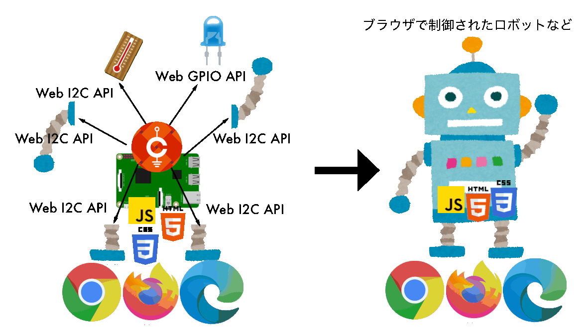
電子パーツをプログラムで制御するには、C言語やPython向けの専用SDK、あるいはボードごとに異なる開発環境を新しく覚える必要がある、と身構えている人は少なくないでしょう。CHIRIMEN は、その手間を要求しません。Webの標準技術、つまりブラウザやNode.js等で実行できるJavaScriptだけで電子パーツを制御し、フィジカルコンピューティングやIoTシステムを開発できるプロトタイピング環境、それがCHIRIMENです。
デジタルのソフトとフィジカルなハードをWWW上で連携させる仕組みをWeb標準技術とJavaScriptだけで容易に実現できます。
CHIRIMEN Raspberry Pi Zero版について
PiZero上で動くのは、Node.jsというJavaScriptインタープリターです。
次の機能はWebブラウザと同じです。
- プログラミング言語 ～ JavaScript
- 画面表示やGUIに関わらないAPI
- 通信プロトコル
では、Webブラウザを使った画面やGUIはどうするのか。インターネットを介してスマホやPCからコントロールします。これがIoTの代表的な設計パターンです。 このとき、Raspberry Pi Zeroは、IoTエッジデバイスとして動作します。
1.1.1 CHIRIMEN コミュニティ
- CHIRIMEN についてもっと詳しく知りたい
- 自分も開発に参加してみたい
このような関心をお持ちの方は、CHIRIMEN コミュニティへぜひ参加してください。開発ができるエンジニアでなくても、使ってみて気になった点のフィードバックだけでも歓迎します。
参加をご希望の方は、こちらの Slack にご参加ください。
初めてコミュニティに参加する方は、こちらのリンクからご登録ください。
1.2 Raspberry Pi について
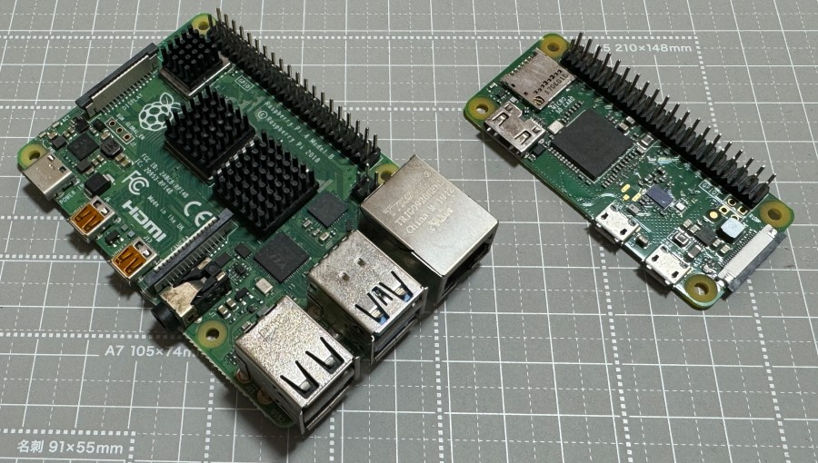
- 教育や学習向けに設計されたシングルボードコンピュータ
- Linux が動作するシングルボードコンピュータとして安価でシェアが高く、世界中で容易に入手できる
- 今回使用する Raspberry Pi Zero WH は、その中でも特に安価（3,000円程度）で小型かつ低消費電力の機種です。HDMI 出力はあるものの、ブラウザを動かすだけの処理能力はありません。センサーやアクチュエータを搭載し、ディスプレイがあっても簡易なものにとどまる IoT のエッジデバイスには適しています。
- フルセットのブラウザが内蔵されたデバイスを作りたい場合は、CHIRIMEN Raspberry Pi版が使用できます。
- インターネットを経由して PC やスマホのブラウザから遠隔操作するシステムは、この Pi Zero W 版でつくれます。IoTの章まで進めましょう。
- 同じサイズの上位機種として、Raspberry Pi Zero 2 W も発売されました。こちらも CHIRIMEN に対応しており、より高い性能が必要な開発にも対応できます。
1.3 JavaScript の基礎
JavaScript は標準化されたプログラミング言語の一つで、ウェブブラウザが代表的な実行環境（プログラムコードを解釈して動作させるシステム）です。CHIRIMEN では、各種の開発を JavaScript で行います。より詳細な情報は 10.3 JavaScript を参照してください。
以下に、初めて学ぶ方やより詳しい情報を知りたい方に向けたテキストを紹介します。
Web開発をはじめよう
Web開発を始める方に向けた入門ガイドです。JavaScript のほかに HTML/CSS を用いるWeb開発の基礎から、GAS（Google Apps Script）を利用したアプリ開発まで解説しています。
JavaScript 1 Day 講習
プログラミング未経験者に、1 日で JavaScript を教える際にちょうど良い分量の資料です。
JavaScript Primer - ECMAScript 2019時代のJavaScript入門書
最新言語仕様も考慮した本格的な JavaScript 入門書です。開発ツールなどについても 付録: 参考リンク集 が参考になります。
JavaScript チートシート
JavaScript の基本的な言語機能をまとめたチートシートです。プログラミング初心者は、こちらを参照しながらコードを読み書きすることをおすすめします。
非同期処理 (async await) 解説
ハード制御では必須ですが、多くの人が引っかかる非同期処理について簡単に解説します。非同期処理についてより詳しくは、JS Primer の非同期処理説明ページ をご覧ください。
1.4 よく使う情報へのリンク
CHIRIMEN PiZero 版でよく使うリンクをまとめたページです。
重要な情報のリンク
- PiZeroターミナル(Web Serial RPiZero Terminal)
- piZeroサンプルプログラム集
- CHIRIMEN 対応全デバイスリスト
- Raspnberry PiZeroのピン配置図(Raspberry Piと共通)
CHIRIMEN に関するリンク集
- Web Serial RPiZero Terminal
- CHIRIMEN with Node.js / RPi Zero Examples
- CHIRIMEN パネルの examples に PC からアクセスできます。
- CHIRIMEN 対応デバイスリスト
- Pi Zero 版に限らない CHIRIMEN 全般に対応したデバイス一覧です。
開発に有用な情報サイト集
- Web開発をはじめよう
- Web開発を始める方に向けた入門ガイドです。
- JavaScript Primer - ECMAScript 2019時代のJavaScript入門書
- 最新言語仕様も考慮した本格的な JavaScript 入門書です。
- JavaScript チートシート
- JavaScript の基本的な言語機能をまとめたチートシートです。
- GitHub ハンズオン(PDF)
- GitHub の基本的な使い方が分かるハンズオン資料です。
- CodeSandbox ガイド
- ブラウザ上で開発する CodeSandbox の使い方を確認しましょう。
2. 準備
CHIRIMEN PiZero チュートリアルの実施に必要な機材の準備と環境設定について解説します。各ステップに従って準備を進めてください。
2.1 ステップ０ (物品準備、PCをWiFiに接続)
必要な物品リスト
以下を用意します
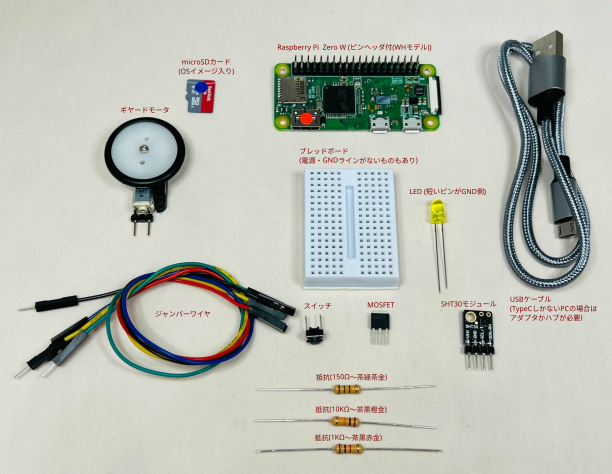
- Raspberry Pi Zero 2 WH
- microSDカード
- CHIRIMEN Lite 最新リリース版を書き込みます
- 自分でイメージを書き込む場合は「SDカードの作成の手順」をご確認ください。
- USBケーブル (USB A - MicroB)
- Lチカ用パーツ(以下のパーツ一式を用意します)
- ブレッドボード
- LED
- 1KΩ抵抗
- ジャンパーワイヤ オス-メス 2本
- GPIO入力実験用追加パーツ(以下のパーツを用意します)
- タクトスイッチ
- モーター制御用追加パーツ(以下のパーツ一式を用意します)
- 10KΩ抵抗
- MOSFET
- ギヤードモーター（ミニモーター）
- 温度センシング実験用追加パーツ（温湿度センサーはいずれかを用意します）
- ADT7410モジュール もしくは SHT30モジュール
- ジャンパーワイヤ オス-メス 4本（追加 2本）
- ブラウザの載ったパソコン（いずれもUSBとWiFiが使える必要があります）
- Windows
- ブラウザは Edge もしくは Chrome、Firefox が必要です。
- macOS
- ブラウザは Chrome もしくは Firefox が必要です。
- Chrome OS / Chromebook
- 確認済みハード：Lenovo Chromebook S330
- Linux
- ブラウザは Chrome、Edge、Firefox Nightly いずれかが必要です。
- Ubuntu：
sudo gpasswd -a "$(whoami)" dialoutコマンドを実行し、シリアル通信を可能にしておく必要があります。
- Windows
※ Pi Zero自体はディスプレイやキーボードを接続する必要はありません。
開発用 PC をネットワークに接続
- 会場(もしくは開発場所)で提供されているネットワークにまずはPCを接続してください。
2.2 ステップ1（ターミナル接続）
- CHIRIMEN Lite 最新リリース版を書き込んだ microSDカードを Raspberry Pi Zero に差し込みます。
- PC の USB ポートと Raspberry Pi Zero の USB OTG ポートを、USB ケーブルで接続します
- PiZero 側は接続するポートに注意してください。下図の矢印の位置に接続します
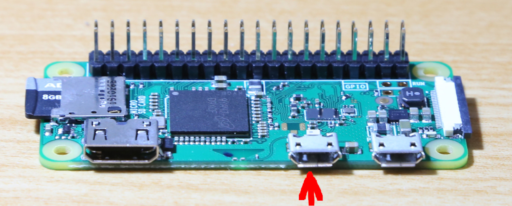
- PC からの USB 給電により、Raspberry Pi Zero が起動します。
- PiZero 側は接続するポートに注意してください。下図の矢印の位置に接続します
- PC で Raspberry Pi Zero が認識されたことを確認します (デバイスマネージャーの開き方 🔗の例)
- 給電後、USB デバイスとして認識されるまで数十秒程度かかります
- Windows の場合、ポートの番号（COMn の n の部分）は環境ごとに異なります
- こちらのWeb Serial RPiZero TerminalページにPCのブラウザでアクセス (以降、このウィンドをターミナルウィンドと呼びます)
- ターミナルウィンドの
[Connect and Login PiZero]ボタンを押します- 接続ダイアログが表示されます
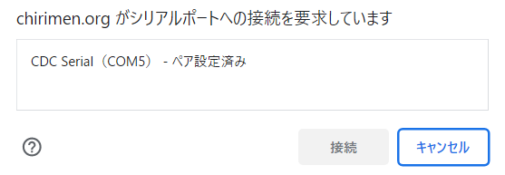
- 上で確認したデバイス（ポート番号）を選択して接続します
- 接続ダイアログが表示されます
- コンソール（左側の黒い画面の最下部）に、以下のコマンドプロンプトが表示されればステップ１は完了です。引き続きステップ２に進んでください
pi@raspberrypi:~$
Note:CHIRIMEN-lite の CLI 操作について
CHIRIMEN Raspberry Pi Zero 版では、Raspberry Pi OS Lite（Linux）をコマンドラインインターフェース（CLI）やシェル（bash）で操作します。
ただし、この講習ではターミナルウィンドによる GUI 操作が可能なので、実際に使うコマンドはごくわずかです。
代表的なコマンド:
nodeコマンド
重要な操作:
- CtrlキーとCキーの同時押し … 実行中プロセスの終了
その他のほとんどの操作（コマンド）は、ターミナルウィンドや、そこから起動される別画面の GUI がコマンド操作を代行します。図1.1 の GUI を操作すると、コンソールにコマンドが入力されることがわかります。
ターミナルウィンドの概要（図1.1）
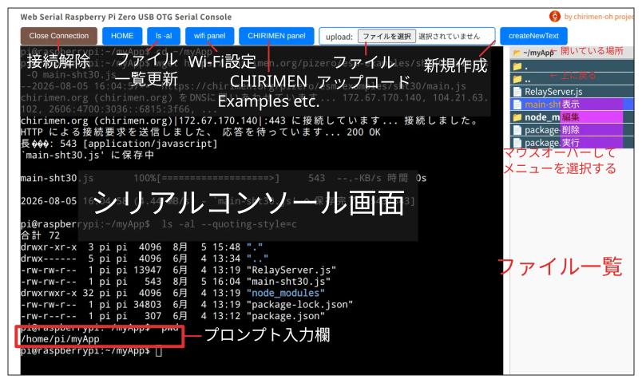
Linuxのシェルに慣れている方はシリアルコンソール画面に直接シェルのコマンドを入力して使用することもできます。たとえば ls と入力すると、ディレクトリ内のファイルの一覧がシリアルコンソール画面に表示されます。
参考リンク:
Note. Raspberry Pi4 の利用方法
- このチュートリアルは、PiZero 以外に Raspberry Pi4 でも利用できます。
- Pi4 の USB 給電口と PC を接続すれば、同様の手順でチュートリアルを進められます。
- PiZero より Pi4 は消費電力が多いため、電力が不足すると同様に動作しない場合があります。
- 使用する USB ケーブルは Type-C です。
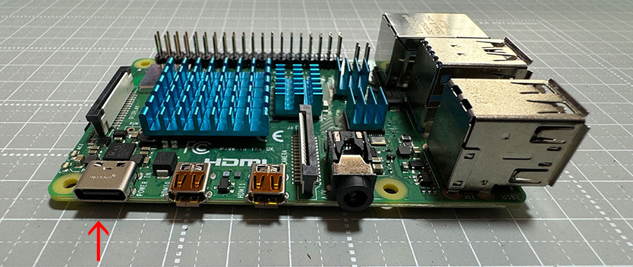
2.3 ステップ2 (WiFi設定)
- ターミナルウィンドの
[wifi panel]ボタンを押します- ウィンドが開き、WiFiアクセスポイントがスキャンされます。ステルスでないアクセスポイントは一覧に表示されるので、以降の作業の参考にしてください。
- Raspberry Pi Zero W は 2.4GHz帯の WiFi にのみ対応しています。
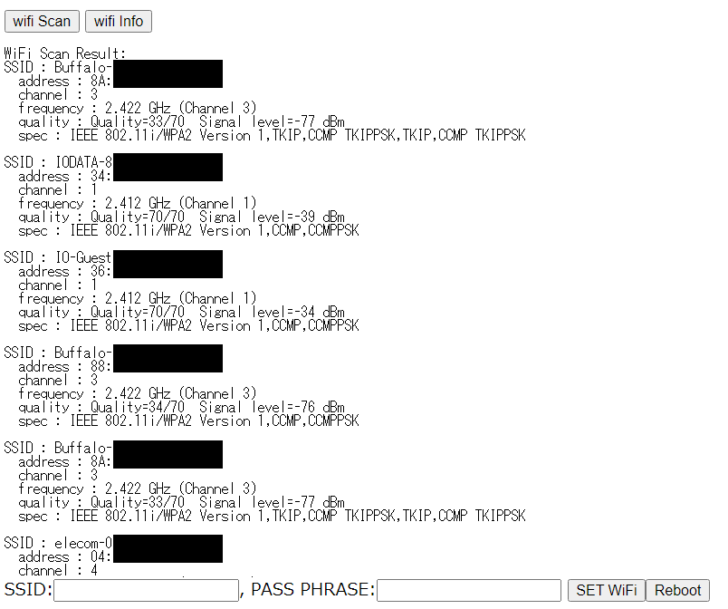
- ウィンド下部に、WiFiアクセス情報を入力します (いずれも大文字と小文字が区別されるので注意してください)
- SSID欄
- PASS PHRASE欄
[SET WiFi]ボタンを押します[Reboot]ボタンを押します- これで Raspberry Pi Zero が再起動を始めます
- WiFiウィンドを閉じ、ターミナルウィンドに戻ります
- ターミナルウィンドの
[Close Connection]ボタンを押します - 1-2分程待ちます（この間に Raspberry Pi Zero が再起動します）
[Connect and Login PiZero]ボタンを押して接続します- 接続ダイアログが表示されます。接続すると、これまでと同様にコマンドプロンプトが表示されます。
[wifi panel]ボタンを再び押します[wifi Info]ボタンを押します- 表示された情報を確認します
- wlan0: inet xxx.xxx.xxx.xxx (xxxは数字)のようにIPアドレスが設定されていれば接続に成功しています。
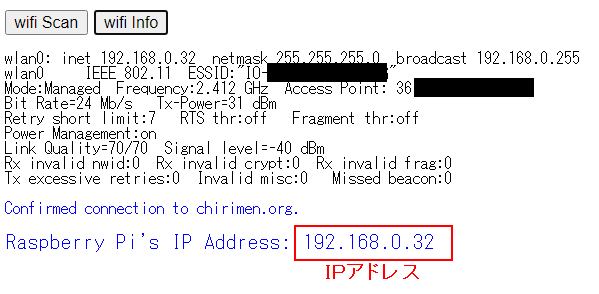
- 確認できたら、WiFi Settingウィンドを閉じてください。
- sshやscp (WinSCP, teraterm等)などのツールに慣れている場合は、上記のアドレスでssh接続できます
- PORT: 22
- ID:
pi - PASSWORD:
raspberry
3. Hello Real World（Lチカを実行する）
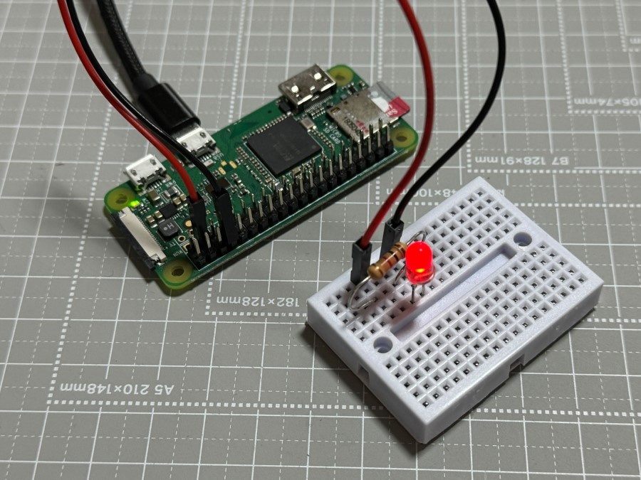
Lチカとは、LED を点けたり消したりチカチカ点滅させることです。 「LED を点ける」「LED を消す」をプログラムで繰り返し実行することで実現します。 この章では、CHIRIMEN による開発の流れを追いながら Lチカを実装します。3.1 配線
PiZero とパーツを使って下の図の通りに配線します。
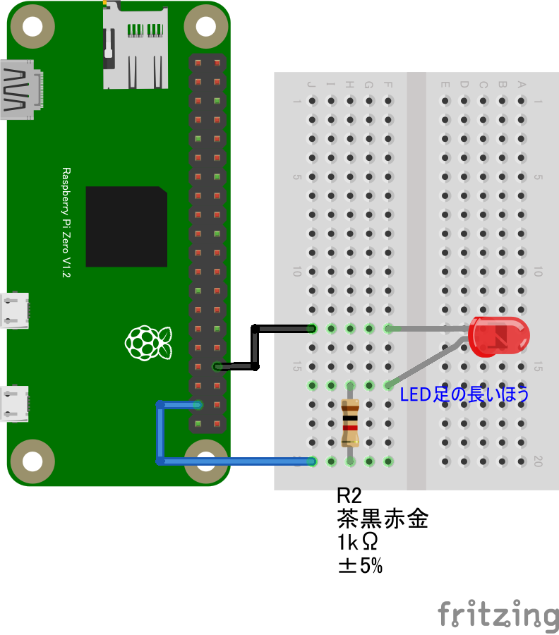
！！注意！！
- 間違ったピンに差し込むと、場合によっては PiZero が停止したり故障したりすることがあります。（たとえば3.3V端子とGND端子を接続してしまうなど。）
- そのため、慣れるまでは一旦 PiZero をシャットダウンし、USB ケーブルも外して電源を OFF にしてから配線すると安全です。
- シャットダウンコマンド：
sudo shutdown -h now
- シャットダウンコマンド：
- LEDの極性に注意！
- LED には極性 (方向) があり、足が長い方 (アノード) を GPIO 出力ピンに、足が短い方 (カソード) を GND 側に繋いでください。
- LEDの説明
- ブレッドボードの使い方
- 抵抗値の読み方
- その他、配線の基礎知識
- 配線に使うケーブルの色に厳密な決まりはありませんが、一般的にGNDは黒(や黒っぽい色)、電源(VCC, +3.3V, +5V)には赤(や赤っぽい色)が用いられます。配線間違いを防ぐためにも、なるべく合わせましょう。
- 抵抗や LED の足(リード線)は手で簡単に曲げられます。ブレッドボードに差し込めるように適当に成型してください。
- 上図の PiZero は上から見たものです。
3.2 プログラムを書く
Raspberry Pi に接続した LED を点滅させるプログラムを書きます。
- ターミナルウィンドで Raspberry Pi Zero に接続します。（準備のステップ１まで完了した状態）
- myAppディレクトリに移動します。
- コンソールの右側のファイルマネージャで myApp ⇒ 移動を選びます。
- このディレクトリに、開発環境が設定されています。
[Create New Text]ボタンを押します。- 入力欄に
hello.jsと入力します。 [create]ボタンを押します。- JS Editorウィンドが出現します。
以下のプログラムを JS Editor に書き写します。下記のプログラム部分を選択して CTRL+c、JS Editor ウィンド上で CTRL+v でコピペしても構いません。
Lチカのプログラムソースコード
import { requestGPIOAccess } from "node-web-gpio"; // WebGPIO を使えるようにするためのライブラリをインポート
const sleep = (ms) => new Promise((resolve) => setTimeout(resolve, ms)); // sleep 関数を定義
const gpioAccess = await requestGPIOAccess(); // GPIO を操作する
const port = gpioAccess.ports.get(26); // 26 番ポートを操作する
await port.export("out"); // ポートを出力モードに設定
// 無限ループ
while (true) {
// 1秒間隔で LED が点滅します
await port.write(1); // LEDを点灯
await sleep(1000); // 1000 ms (1秒) 待機
await port.write(0); // LEDを消灯
await sleep(1000); // 1000 ms (1秒) 待機
}
- 書き終えたら保存します。(
[Save]ボタンもしくはCTRL+s) - ターミナルウィンドの右側 (ファイルマネージャ) に hello.js が出現していることを確認します。
- エディタウィンドを閉じます。
3.3 実行する
- ターミナルウィンドのコンソール部 (ウィンド左側) のプロンプト (画面一番下) が以下になっていることを確認します。
pi@raspberrypi:~/myApp$
- コンソール部をクリックして、入力可能状態にしてから、以下の文字を入力します。
node hello.jsと入力して ENTER キーを押します。- node は JavaScript のコードを実行するインタープリタです。
- nodeコマンドについて
- LED が点滅すれば完成です。🎉
- プログラムを止めるには、コンソール部で
CTRL+cを押します。
3.4 コードを読む
前提：CHIRIMEN Raspberry Pi Zero は Node.js をプログラム実行環境（インタープリタ）として使っています。 Raspberry Pi Zero 版では、プログラムの起点は自分が書いた JavaScript コードそのものになります。 ブラウザの代わりに、Node.js という JavaScript コードだけを解釈するソフト（JavaScript インタープリタ）にコードを読み込ませて実行します。
ターミナルウィンドの右側のファイルマネージャでhello.js ⇒ 表示 を選び、ソースコードを読んでみましょう
import { requestGPIOAccess } from "node-web-gpio"; // WebGPIO を使えるようにするためのライブラリをインポート
const sleep = (ms) => new Promise((resolve) => setTimeout(resolve, ms)); // sleep 関数を定義
const gpioAccess = await requestGPIOAccess(); // GPIO を操作する
const port = gpioAccess.ports.get(26); // 26 番ポートを操作する
await port.export("out"); // ポートを出力モードに設定
// 無限ループ
while (true) {
// 1秒間隔で LED が点滅します
await port.write(1); // LEDを点灯
await sleep(1000); // 1000 ms (1秒) 待機
await port.write(0); // LEDを消灯
await sleep(1000); // 1000 ms (1秒) 待機
}
1行目：WebGPIOライブラリを読み込み (JavaScript Module仕様に従って)
import { requestGPIOAccess } from "node-web-gpio";
JavaScript module の仕組みで WebGPIO ライブラリを読み込んでいます。これで Web GPIO API が使えるようになりました。
4行目：GPIOポートの初期化処理
const gpioAccess = await requestGPIOAccess();
このファイルで最初に実行されるのが await requestGPIOAccess() です。Web GPIO API の関数で、GPIO にアクセスするためのインタフェース gpioAccess を取得しています。
関数の呼び出しに await 接頭詞が付いていることに注目してください。 requestGPIOAccess() は非同期関数で、GPIO への準備が整うまで処理を待つ必要があります。通常、await を使うコードは async 接頭詞付きの関数として定義しなければなりませんが、JavaScript module のトップレベルに限っては例外です。モジュールの最上位では async 関数で包まなくても await をそのまま書けます。これをトップレベル await と呼び、hello.js 自体がモジュールなので、ファイル冒頭からいきなり await requestGPIOAccess() と書けています。
5〜7行目：GPIOPortの出力処理
const port = gpioAccess.ports.get(26);
GPIO の出力機能を使う準備として、gpioAccess.ports.get(26) で GPIO の 26 番ポートにアクセスするためのオブジェクトを取得しています。
await port.export("out");
続いて await port.export("out") で GPIO の 26 番を「出力設定」にしています。これにより LED への電圧の切り替えが可能になります。
10行目以降：無限ループ部分
ループの中身は、電圧の切り替えとその合間の待機の繰り返しにすぎません。await port.write(1) と await port.write(0) を交互に呼び出し、GPIO 26 番に加える電圧を 3.3V → 0V → 3.3V → 0V → … と切り替えています。切り替えの間隔を作っているのが await sleep(1000) で、1000 ms (1 秒) が経つまで次の書き込みを待たせています。
4. GPIOを試す
Lチカが無事に動いたら、IoT開発の第一歩を踏み出したことになります。次は LED を光らせる以外のセンサーやアクチュエーターを使用するために、GPIO についてより深く学んでいきます。
ここからは実際にミニモーターを動作させるサンプルと、ボタンの入力デモを行っていきます。
4.1 GPIOを理解する
GPIOという略語だけを見ると、何を指しているのか見当がつかないかもしれません。正体は単純で、「General-purpose input/output」、つまり汎用的な入出力インタフェースのことです。
Raspi に実装されている 40 本のピンヘッダから、このGPIOを利用できます。ただし、40本すべてが自由に使えるわけではありません。CHIRIMEN Raspi、Raspi Zero では、Raspi が提供する 40 本のピンヘッダのうち、下記緑色のピン(合計 17 本)だけが利用可能です。
- 白い文字で書かれたピンだけが使えます
- GND、3.3V、5Vはそれぞれ電源とグランドです
- 数字 + PD||PUと書かれているピンは GPIO端子です
- PD:プルダウン, PU:プルアップ
- SCL, SDAはI2Cインターフェースのピンです(詳細は I2Cデバイスを試すにて)

Raspi の GPIO 端子は、GND 端子との間に、0V もしくは 3.3V の電圧を印加(出力)したり、逆に 0V もしくは 3.3V の電圧を検知(入力)したりできます。この二値の切り替えだけで、何ができるのでしょうか。LED は数 mA の電流を流すことによって点灯する電子部品です。印加する電圧を 3.3V(点灯)、0V(消灯) と切り替えるだけで、L チカが実現できます。
詳しくはこちらのサイトの解説を参考にしてください。
4.2 GPIOを出力
GPIOの出力はLチカですでに実験しました。今回はモーターを動かしてみましょう。回路にはMOSFETを使用し、回路図は以下のようになります。
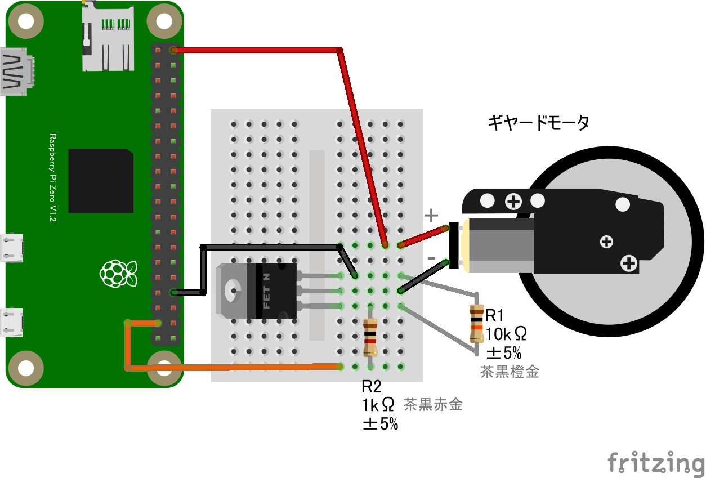
コードはLチカと全く同じ hello.js をそのまま使用できます。
node hello.jsと入力してENTERキーを押します
回路
- 10.2.4 MOSFETを使った大電力制御を参照してください
4.3 GPIOを入力（onchange）
GPIO端子は、入力が変化したら関数を実行するという機能を使って入力を扱います。
- ターミナルウィンドの
[CHIRIMEN Panel]ボタンを押す - 出現したCHIRIMEN Panelの
[Get Examples]ボタンを押す - ID : gpio-onchange を探します
- 回路図リンクを押すと回路図が出てきますので、回路を組みます。
[JS GET]ボタンを押すと、開発ディレクトリ(~/myApp)に、サンプルコードが保存されます。- main-gpio-onchange.jsというファイル名で保存されます。
- ターミナルウィンドの右側のファイルマネージャでmain-gpio-onchange.js ⇒ [編集] を選びます。
- 実行する
- ターミナルウィンドのコンソールのプロンプトが
pi@raspberrypi:~/myApp$となっていることを確認 - ターミナルウィンドのコンソールに、
node main-gpio-onchange.js[ENTER] と入力して実行。 - タクトスイッチを押してみます。
- タクトスイッチが押されるたびにコンソール画面に0(押された状態)、1(離した状態)が交互に表示されます。
- Note: GPIOポート5は、Pull-Up(開放状態でHighレベル)です。そのため離した状態で1が出力されます。スイッチを押すとポートがGNDと接続され、Lowレベルになり、0が出力されます。
- ターミナルウィンドのコンソールのプロンプトが
- 終了は CTRL+c
4.3.1 onchange コードを読む
ターミナルウィンドの右側のファイルマネージャでmain-gpio-onchange.js⇒表示 を選び、ソースコードを読んでみましょう
- GPIO ポートの値が変化するたびに、指定した関数が呼び出されるコードです。
import { requestGPIOAccess } from "node-web-gpio";
function showPort(ev){
console.log(ev.value);
}
const gpioAccess = await requestGPIOAccess();
const port = gpioAccess.ports.get(5);
await port.export("in");
port.onchange = showPort;
GPIO ポートの初期化は、Lチカの 3.4 コードを読む で見た手順と同じです。ここでは 5 番ポートにアクセスするためのオブジェクトを取得し、GPIO 入力機能を使って 5 番を「入力設定」にしています。
これだけでは、値を読み取ることはできても変化には気づけません。そこで使うのが port.onchange です。入力モードの GPIO ポートに「状態が変化したときに呼び出す関数」を設定する機能で、このように呼び出される関数をコールバック関数と呼びます。値を都度読みに行く port.read() のコードと違ってポーリング処理を自分で書く必要がなく、コードは簡潔になります。ただし呼ばれるのは値が変化した瞬間だけなので、現在の値をいつでも取得したい用途にはあまり向きません。
4.4 GPIOを入力（ポーリング）
GPIOの入力には、イベントを使う方法の他に、ポーリングという手法も広く使われます。次章で扱うI2Cデバイスからの入力では、もっぱらポーリングを使用します。
-
ターミナルウィンドの
[CHIRIMEN Panel]ボタンを押す -
出現したCHIRIMEN Panelの
[Get Examples]ボタンを押す -
ID : gpio-polling を探します
-
回路は前章と同じなのでそのままにしておきます。
-
[JS GET]ボタンを押すと、開発ディレクトリ(~/myApp)に、サンプルコードが保存されます。- main-gpio-polling.jsというファイル名で保存されます。
- ターミナルウィンドの右側のファイルマネージャでmain-gpio-polling.js⇒編集を選び、ソースコードを見てみましょう。
-
実行する
- プロンプトが
pi@raspberrypi:~/myApp$となっていることを確認 - コンソールに、
node main-gpio-polling.js[ENTER] と入力して実行。 - 0.3秒おきにポート5の値がコンソールに表示されていきます。
- タクトスイッチを押してみます。
- タクトスイッチが押されると、0に変化します。
- プロンプトが
-
終了は CTRL+c
4.4.1 polling コードを読む
値の取得や入力のための基本的な関数は、呼び出した瞬間の値を一回だけ返すものがほとんどです。値そのものではなく値の変化を捉えたいなら、この一回きりの読み取りを無限ループの中で定期的に繰り返す必要があります。この繰り返しの手法を一般にポーリングと呼びます（wikipedia:ポーリング）。
ターミナルウィンドの右側のファイルマネージャでmain-gpio-polling.js⇒表示 を選び、ソースコードを読んでみましょう
import { requestGPIOAccess } from "node-web-gpio";
const sleep = (ms) => new Promise((resolve) => setTimeout(resolve, ms));
const gpioAccess = await requestGPIOAccess();
const port = gpioAccess.ports.get(5);
await port.export("in");
while (true) {
const v = await port.read();
console.log(v);
await sleep(300);
}
GPIO ポートの初期化は、Lチカの 3.4 コードを読む と同じ手順です。port.export("in") で GPIO ポートを「入力モード」に初期化しており、この初期化は非同期処理なので await で完了を待つ必要があります。入力モードは、GPIO ポートにかかる電圧を Web アプリ側から読み取りたいときに使います。
読み取り自体は port.read() が一回分の値を返すだけの単純な関数です。しかしスイッチが押されたかどうかを監視するには、一回読んで終わりにはできません。そこで await port.read() を無限ループの中に置き、300 ms おきに読み直すことでポーリングのルーチンを組んでいます。
4.5 GPIOセンサーを複数同時に使う
ボタンでLEDとモーターを制御する
-
LED の点滅制御（Lチカ）から、ボタンで点灯する制御に変更してみましょう。
-
回路図は以下のとおりに接続します。LEDとモーターのどちらか一方で動作させることができます。
- GPIO PORT5にスイッチ、GPIOPORT26に抵抗とLED を繋ぎます
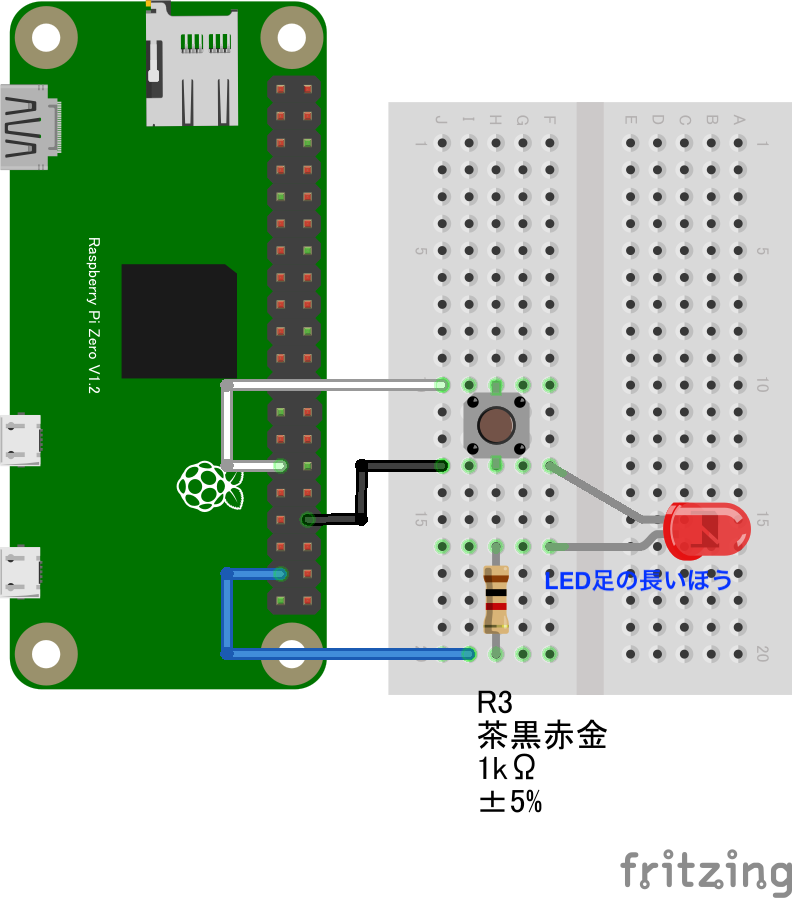
- GPIO PORT5にスイッチ、GPIOPORT26に抵抗とLED を繋ぎます
-
モーターを使用する場合の回路図は以下のとおりです。
- GPIO PORT5にスイッチ、GPIOPORT26にモーター制御回路を繋ぎます
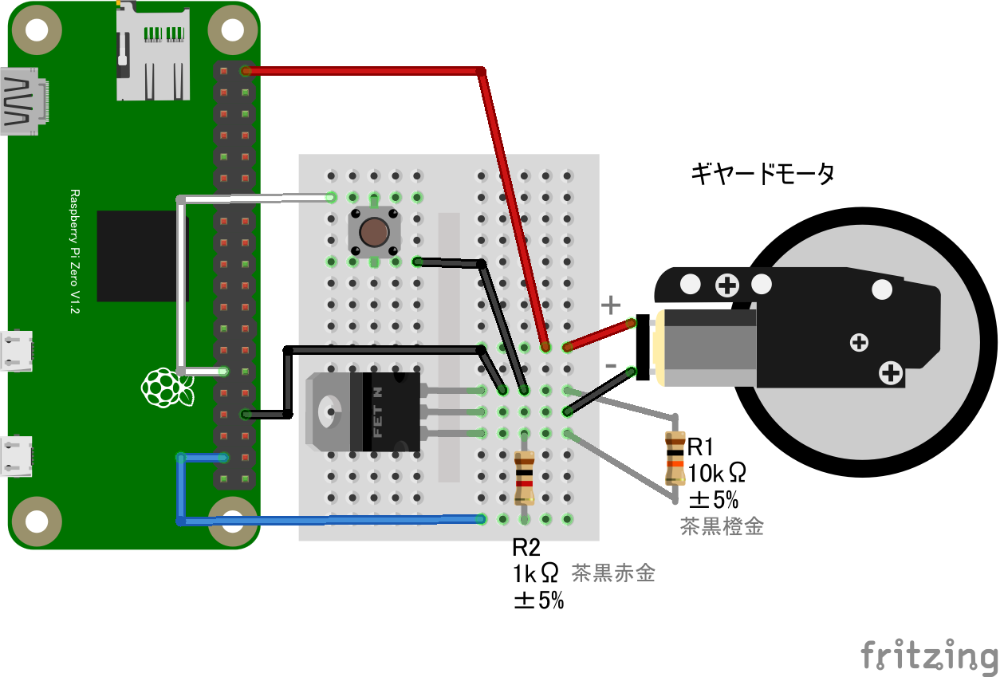
- GPIO PORT5にスイッチ、GPIOPORT26にモーター制御回路を繋ぎます
4.5.1 Lチカのコードを書き換える
- Lチカのコードを書き換えて、スイッチで動作するように変更します。
- 正しく回路を接続してコードを書き換えると、ボタンを押したときに LED やモーターが動作するようになります。
- うまく動作しない方は、コピペで動作を確認してみましょう。
- port 変数を、初期化コードと showPort 関数の両方から使えるように宣言しなおします。
const sleep = (ms) => new Promise((resolve) => setTimeout(resolve, ms));
let port; // port 変数を初期化コードと showPort 関数の両方から使えるように宣言
const gpioAccess = await requestGPIOAccess();
port = gpioAccess.ports.get(26); // 26 番ポートを操作する、ここの変数は宣言済みなので const は削除する
- 無限ループの処理は削除します。
/* ここは削除する
// 無限ループ
while (true) {
// 1秒間隔で LED が点滅します
await port.write(1); // LEDを点灯
await sleep(1000); // 1000 ms (1秒) 待機
await port.write(0); // LEDを消灯
await sleep(1000); // 1000 ms (1秒) 待機
}
- ボタンの初期化処理を記述します。
const port2 = gpioAccess.ports.get(5);
await port2.export("in");
port2.onchange = showPort;
- ボタンの処理を追記します。
function showPort(ev){
console.log(ev.value);
if (ev.value==0){
port.write(1);
} else {
port.write(0);
}
}
- 全体のソースコードは以下のとおりです。
import { requestGPIOAccess } from "node-web-gpio"; // WebGPIO を使えるようにするためのライブラリをインポート
const sleep = (ms) => new Promise((resolve) => setTimeout(resolve, ms)); // sleep 関数を定義
let port; // port 変数を初期化コードと showPort 関数の両方から使えるように宣言
const gpioAccess = await requestGPIOAccess(); // GPIO を操作する
port = gpioAccess.ports.get(26); // 26 番ポートを操作する、ここの変数は宣言済みなので const 宣言は削除する
await port.export("out"); // ポートを出力モードに設定
// ここから記述する
const port2 = gpioAccess.ports.get(5);
await port2.export("in");
port2.onchange = showPort;
function showPort(ev){
console.log(ev.value);
if (ev.value==0){
port.write(1);
} else {
port.write(0);
}
}
// ここまで
このコードは、CHIRIMENパネルのID: gpio-inout と同じです。うまく動作しなかった場合は、そちらのコードと見比べて確認してください。
5. I2Cデバイスを試す
- I2C（アイ・ツー・シー／アイ・スクエアド・シー）センサーの使い方を学びます。
- I2Cセンサーを利用するにあたり、以下のポイントが重要になります。
I2C通信の基本
I2Cの概要として、以下の点を押さえておきましょう。
- I2C バスを介して複数のデバイスが繋がる
- I2C デバイスにはマスターとスレーブがある
- I2C ではマスターからスレーブに対して通信要求が行われる
- I2C スレーブは SlaveAddress を持つ
- 同じ I2C バスに同じ SlaveAddress のデバイスは繋げない
Raspberry Pi の I2C端子
下図のSCL, SDAがI2C端子です（黄色の端子）。
5.1 I2Cを理解する
I2Cの概要
I2C は、名前だけ見ると独自規格に見えるかもしれませんが、実体は 2 線式の同期式シリアル通信インタフェースです。「アイ・スクエア・シー」や「アイ・ツー・シー」と読みます。通信に使う線は SDA（シリアルデータ）と SCL（シリアルクロック）の 2 本だけです。
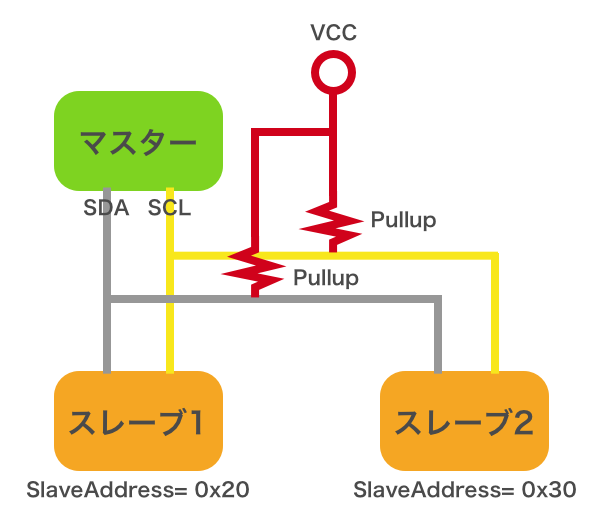
上図のように、この SDA、SCL は複数のデバイス間で共有されます。これを「I2C バス」と言います。バス上の通信は、マスターとスレーブという非対称な関係で行われます。要求はマスター側から一方的にスレーブ側へ送られ、スレーブ側からマスター側へ要求を送ることはできません。
本チュートリアルでは、CHIRIMEN環境を動かすボードコンピュータがマスターにあたります。ここに接続されるセンサーやアクチュエータデバイスが、スレーブです。スレーブデバイスの一例として、こちらに紹介されているI2Cデバイスを見てみてください。
複数のスレーブが同じバスにぶら下がっているとき、マスターはどうやって相手を選ぶのでしょうか。マスターは、スレーブが持つ「SlaveAddress (スレーブアドレス)」を指定して、特定のスレーブとの通信を行います。このため、同じ I2C バス上に、同じ SlaveAddress のスレーブを繋ぐことはできません。I2Cデバイスは小型のICチップで、デバイスによってはSlaveAddressが製品ごとに固定されています。
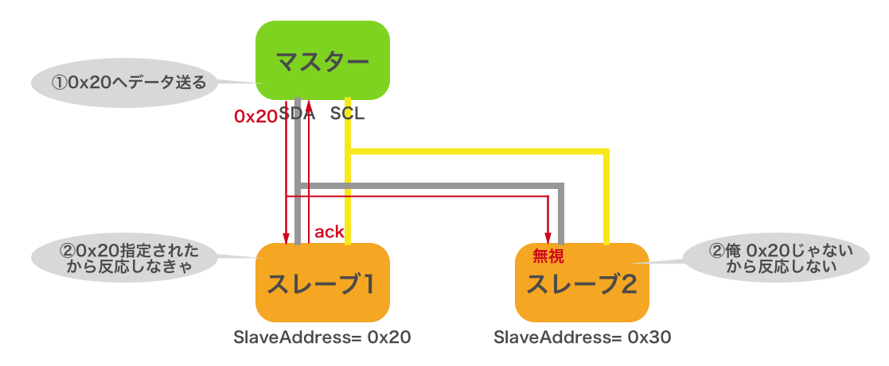
通信するデバイス同士が同一基板上にない場合には、SDA、SCL の 2 本の通信線に加えて電源や GND の線を加え、4 本のケーブルで接続するのが一般的です。電源電圧は、デバイスに応じたものを選ぶ必要があります。
5.2 I2Cセンサーを動作させる（SHT30編）
SHT30は温度に加えて湿度も測定できる、I2C接続の多機能センサーです。 SHT31もほぼ同等に使えます（精度はSHT31のほうが高くなります）。
-
ターミナルウィンドの
[CHIRIMEN Panel]ボタンを押す -
出現したCHIRIMEN Panelの
[Get Examples]ボタンを押す -
ID : sht30 を探します
-
回路図リンクを押すと回路図が出てきますので、回路を組みます。なお、接続は下の図のようになります。
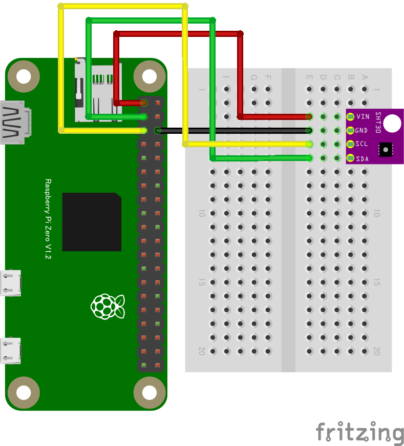
5.2.1 I2Cセンサー（SHT30）の認識を確認する
CHIRIMEN Panel で認識を確認する
-
CHIRIMEN Panelの
[i2c detect]ボタンを押す- SHT30 の I2Cアドレス 0x44が表示されていればうまく接続されています。
I2Cデバイスが正常に接続されているかどうかは、ターミナルから i2cdetect コマンドを使って確認できます。
このコマンドは I2C バスをスキャンし、応答のあったスレーブアドレスを表示するツールです。
コマンドラインで確認する
ターミナルから以下のコマンドを入力しても、同様に確認できます。
i2cdetect -y -r 1
i2cdetect を実行すると、スキャン結果が以下のように CHIRIMENパネルやターミナルに表示されます。
0 1 2 3 4 5 6 7 8 9 a b c d e f
00: -- -- -- -- -- -- -- -- -- -- -- -- --
10: -- -- -- -- -- -- -- -- -- -- -- -- -- -- -- --
20: -- -- -- -- -- -- -- -- -- -- -- -- -- -- -- --
30: -- -- -- -- -- -- -- -- -- -- -- -- -- -- -- --
40: -- -- -- -- 44 -- -- -- -- -- -- -- -- -- -- --
50: -- -- -- -- -- -- -- -- -- -- -- -- -- -- -- --
60: -- -- -- -- -- -- -- -- -- -- -- -- -- -- -- --
70: -- -- -- -- -- -- -- --
0x44 の表示が見えないときは、正しく接続されていません。 回路図を確認し、正しく接続できているかを再確認してください。
5.2.2 SHT30 のコードの取得と実行
サンプルコードを取得する
[JS GET]ボタンを押すと、開発ディレクトリ(~/myApp)に、サンプルコードが保存されます。- main-sht30.jsというファイル名で保存されます。
- Note: ターミナルウィンドの右側のファイルマネージャで main-sht30.js ⇒編集 を選ぶと、エディタで編集できます。
サンプルコードを実行する
- ターミナルウィンドのコンソールのプロンプトが
pi@raspberrypi:~/myApp$となっていることを確認 - ターミナルウィンドのコンソールに、
node main-sht30.js[ENTER] と入力して実行。 - 温度と湿度が1秒ごとにコンソールに表示されます。
- 終了は CTRL+c
5.2.3 SHT30 のコードを読む
- ターミナルウィンドウ右側のファイルマネージャで
main-sht30.jsを選択し、「表示」を実行してソースコードを開きます。
import { requestI2CAccess } from "node-web-i2c";
import SHT30 from "@chirimen/sht30";
const sleep = (ms) => new Promise((resolve) => setTimeout(resolve, ms));
const i2cAccess = await requestI2CAccess();
const sht30 = new SHT30(i2cAccess.ports.get(1), 0x44);
await sht30.init();
while (true) {
const { humidity, temperature } = await sht30.readData();
console.log(
[
`Humidity: ${humidity.toFixed(2)}%`,
`Temperature: ${temperature.toFixed(2)} degree`,
].join(", "),
);
await sleep(500);
}
- WebI2CライブラリとSHT30デバイスドライバを読み込み
- I2C インターフェースに接続されたスレーブデバイスは、Web I2C API と呼ばれる API を通じて操作できます。
import { requestI2CAccess } from "node-web-i2c";
import SHT30 from "@chirimen/sht30";
- JavaScript module の仕組みを使って、WebI2C ライブラリを読み込んでいます。
- I2C 温湿度センサー (SHT30, SHT31)の初期化と使用
- コードが実際に何をしているかを、次のページで一行ずつ確認します。
5.2.4 SHT30 のコードの詳細解説
- I2C 温湿度センサー (SHT30, SHT31)の初期化と使用
const i2cAccess = await requestI2CAccess();
const i2cPort = i2cAccess.ports.get(1);
const sht30 = new SHT30(i2cPort, 0x44);
await sht30.init();
while (true) {
const { humidity, temperature } = await sht30.readData();
temperatureDisplay.innerHTML = `${temperature.toFixed(2)} ℃`;
humidityDisplay.innerHTML = `${humidity.toFixed(2)} %`;
await sleep(500);
}
このコードは、温度センサーの値を定期的に取得して画面に表示しているだけのように見えます。しかし await があちこちに置かれているのには理由があります。ひとつひとつの呼び出しが、実際には I2C バス越しのやり取りを担っているからです。
await requestI2CAccess()
Web I2C API を使うには、まず I2CAccess インターフェースを取得しなければなりません。requestI2CAccess() はその最初の呼び出しで、結果が返るまで時間のかかる非同期処理です。await で完了を待ち、得られたインターフェースを i2cAccess オブジェクトに保持しています。
i2cAccess.ports.get()
I2CAccess.ports には、利用可能な I2C ポートの一覧が入っています。
i2cAccess.ports.get(1);
通常、CHIRIMEN Pi Zero で利用可能な I2C ポート番号は 1 番のみです。引数の get() メソッドに 1 を渡すことで i2cPort オブジェクトは常に 1 番のI2Cポートを参照します。
new SHT30(i2cPort, 0x44)
ドライバーライブラリを使い、SHT30 を操作するためのインスタンスを生成しています。第二引数の 0x44 は、SHT30 の I2C スレーブアドレスです。
const sht30 = new SHT30(i2cPort, 0x44);
await sht30.init()
ドライバーライブラリのインスタンス sht30 の init() メソッドを通じて、I2C ポートを開いてセンサーを初期化しています。
await sht30.init();
内部では、インスタンス生成時に指定した port オブジェクトとスレーブアドレス 0x44 を使って I2CPort.open() を呼び出しています。open() が成功すると、I2C ポートへの読み書きを担う I2CSlaveDevice インターフェースが返ります。この I2CSlaveDevice はライブラリ内部に保持され、以降 SHT30 との通信はすべてこれを通して行われます。
await sht30.readData()
実際にセンサーの値を読み取る処理です。この読み取り関数は、GPIO の単純入力と同様、呼び出された瞬間の値を一回だけ返します。連続的な変化を知りたい場合は、呼び出す側でポーリングのルーチンを組む必要があります。このコードで while ループと sleep() を組み合わせているのは、そのためです。SHT30 の仕様に基づくデータ読み出しを行う処理です。
const { humidity, temperature } = await sht30.readData();
ドライバーライブラリ内部では、SHT30 から得られる温度・湿度それぞれ 16bit の生の数値を、℃ や % といった物理量の値に変換して返却しています。
5.3 I2Cセンサーを動作させる（ADT7410編）
温度センサーADT7410を使います。 SHT30を使用する場合は、「6. IoTを試す」の章まで読み飛ばしてください。
- ターミナルウィンドの
[CHIRIMEN Panel]ボタンを押す - 出現したCHIRIMEN Panelの
[Get Examples]ボタンを押す - ID : adt7410を探します(上から5個目ぐらい)
- 回路図リンクを押すと回路図が出てきますので、回路を組みます。なお、接続は下の図のようになります。
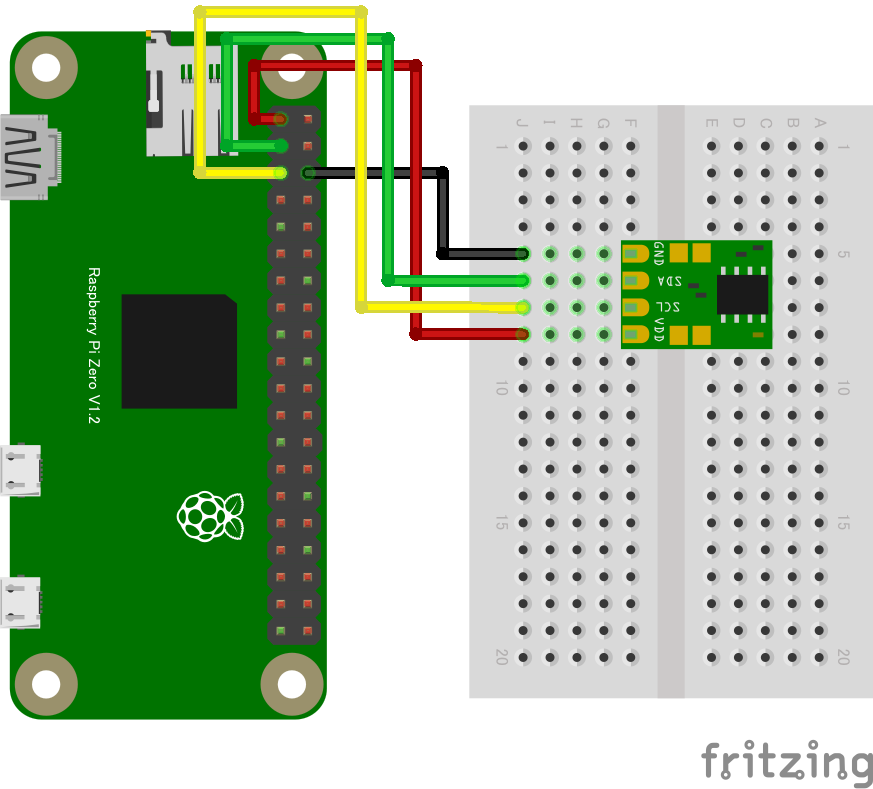
[JS GET]ボタンを押すと、開発ディレクトリ(~/myApp)に、サンプルコードが保存されます。- main-adt7410.jsというファイル名で保存されます。
- Note: ターミナルウィンドの右側のファイルマネージャでmain-adt7410.js⇒編集 を選ぶと、エディタで編集できます。
- ソースコードを見てみましょう
- 今は編集不要ですが、サンプルをベースに応用プログラムを作るときには編集しましょう。
I2Cセンサー（ADT7410）の認識を確認する
- CHIRIMEN Panelの
[i2c detect]ボタンを押すと、ADT7410のI2Cアドレス 0x48が表示されていればうまく接続されています。
0 1 2 3 4 5 6 7 8 9 a b c d e f
00: -- -- -- -- -- -- -- -- -- -- -- -- --
10: -- -- -- -- -- -- -- -- -- -- -- -- -- -- -- --
20: -- -- -- -- -- -- -- -- -- -- -- -- -- -- -- --
30: -- -- -- -- -- -- -- -- -- -- -- -- -- -- -- --
40: -- -- -- -- -- -- -- -- 48 -- -- -- -- -- -- --
50: -- -- -- -- -- -- -- -- -- -- -- -- -- -- -- --
60: -- -- -- -- -- -- -- -- -- -- -- -- -- -- -- --
70: -- -- -- -- -- -- -- --
サンプルコードを実行する
- ターミナルウィンドのコンソールのプロンプトが
pi@raspberrypi:~/myApp$となっていることを確認 - ターミナルウィンドのコンソールに、
node main-adt7410.js[ENTER] と入力して実行。 - 温度が1秒ごとにコンソールに表示されます。
- 終了は CTRL+c
5.4 GPIO と I2Cセンサーを組み合わせる
GPIO センサーと I2Cセンサーは、組み合わせて動作させることもできます。 このチュートリアルで使用した LED（GPIOセンサー）と SHT30温湿度センサー（I2Cセンサー）を組み合わせて、決まった温度になったら LED を光らせるサンプルを試してみましょう。
CHIRIMEN パネル の Get Examples から ID: sht30_led を参考にします。
回路図を確認し、サンプルコードを取得して動作を確認してみましょう。
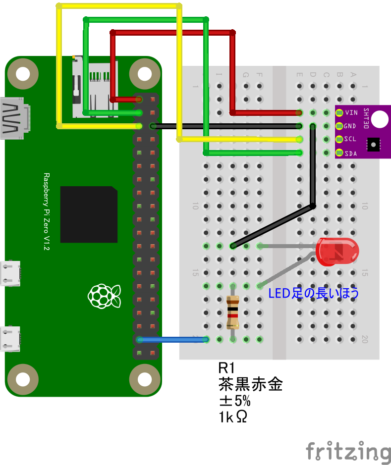
6. IoTを試す
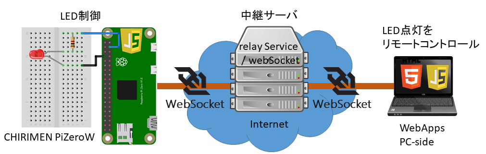
IoT には、制御されるデバイス（上図の CHIRIMEN PiZero W）と利用者端末（上図の WebApp PC-side）に加えて、両者の間でデータを中継するサーバ（クラウド）が必要です。 今回は、Web標準技術である WebSocketプロトコルを中継するサーバを使い、LED を備えた CHIRIMENデバイスとスマホや PC の WebApp をつないだ IoTシステムを作ります。Note: モーター制御の回路を組めば、そのまま遠隔モーターコントロールができます。
用語の詳細な説明は共通資料に記載していますので、興味のある方はご確認ください。
6.1 遠隔LEDコントロール
配線する
配線は、最初の Lチカと同じです。
6.2 PiZero サンプルコードの実行
IoT を動かすには、PiZero 用と PC 用、両方のサンプルコードを実行する必要があります。それぞれの実行方法は、以下を参考にしてください。
CHIRIMENデバイス側にコードを入れ、実行する
- ターミナルウィンドの
[CHIRIMEN Panel]ボタンを押す - 出現した CHIRIMEN Panel の
[Get Examples]ボタンを押す - ID: remote_gpio_led の行を探します（この行の情報は、あとでもう一度使います）
[JS GET]ボタンを押すと、開発ディレクトリ(~/myApp)に、サンプルコードが保存されます。- main-remote_gpio_led.js というファイル名で保存されます。
- ターミナルウィンドの右側のファイルマネージャで main-remote_gpio_led.js ⇒ 編集 を選び、ソースコードを見てみましょう
- 実行する
- ターミナルウィンドのコンソールのプロンプトが
pi@raspberrypi:~/myApp$となっていることを確認 - ターミナルウィンドのコンソールに、
node main-remote_gpio_led.js[ENTER] と入力して実行。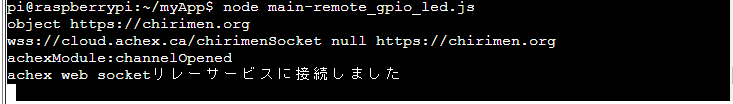
- なお、実験を終えるときは CTRL+c で終了します。
- ターミナルウィンドのコンソールのプロンプトが
6.3 PC サンプルコードの実行
-
CHIRIMEN Panel に戻り、ID: remote_gpio_led の行にある
CSB EDITリンクをクリックする。- CodeSandbox というオンラインの WebApp開発環境のウィンドが開き、PC側のコードが表示され、実行されます。
- CodeSandbox を使って編集もできます。
- 詳しい解説：CodeSandbox ガイド
- 参考画像では、右側のフレームで LED を遠隔コントロールする WebApp がすでに実行されています。
- WebApp を使って LED を制御できることを確かめてみましょう。
- CodeSandbox というオンラインの WebApp開発環境のウィンドが開き、PC側のコードが表示され、実行されます。
-
CodeSandbox の画面構成は次のとおりです。
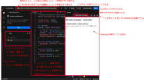
6.4 自分専用チャンネルで制御
サンプルコードは、共通のチャンネルを使って LED を制御しています。そのため、複数人が同時に実習していると混信が起こります（他の人の PC から ON/OFF を指示しても、自分の LED が ON/OFF してしまいます。同じチャンネルを使っているためです）。
共通チャンネルにも使い道はありますが、自分の LED を自分だけで制御したい場合は、専用のチャンネルを使いましょう。チャンネルの指定は、PiZero 側のコードと PC 側のコードの両方で、同時に同じ内容に設定する必要があります。設定する箇所は、以下の部分です。
channel = await relay.subscribe("chirimenLED");
このchirimenLEDという文字列（チャンネル名）を、他の人と重ならない別のチャンネル名に書き換えます（chirimenLED5など）。
6.5 PiZero 側のコードを読む
Raspberry Pi Zero側コード
- ターミナルウィンドの右側のファイルマネージャで
main-remote_gpio_led.jsを選び、[表示] からソースコードを開いてみましょう。
import { requestGPIOAccess } from "node-web-gpio";
import nodeWebSocketLib from "websocket"; // https://www.npmjs.com/package/websocket
import { RelayServer } from "./RelayServer.js";
let channel;
let gpioPort0;
function controlLED(messge) {
console.log(messge.data);
switch (messge.data) {
case "LED ON":
gpioPort0.write(1);
console.log("ON");
channel.send("LEDをオンにしました");
break;
case "LED OFF":
gpioPort0.write(0);
console.log("OFF");
channel.send("LEDをオフにしました");
break;
}
}
// GPIOポート0の初期化
const gpioAccess = await requestGPIOAccess();
const mbGpioPorts = gpioAccess.ports;
gpioPort0 = mbGpioPorts.get(26);
await gpioPort0.export("out");
// webSocketリレーの初期化
const relay = RelayServer(
"chirimentest",
"chirimenSocket",
nodeWebSocketLib,
"https://chirimen.org",
);
channel = await relay.subscribe("chirimenLED");
console.log("web socketリレーサービスに接続しました");
channel.onmessage = controlLED;
LEDを点けたり消したりする指示は、Raspberry Pi Zero自身が思いつくわけではありません。指示はネットワークの向こう、PC側から届きます。冒頭の import を見ると、これまで通りWebGPIOライブラリを読み込んだあとに、見慣れない2行が続いているのはそのためです。
import nodeWebSocketLib from "websocket";
import { RelayServer } from "./RelayServer.js";
ブラウザにはWebSocketの機能が標準で組み込まれていますが、Node.jsにはありません。そのためrelayServer.jsライブラリに加えて、webSocket自体のライブラリも読み込んでおく必要があります。
あとの流れは単純です。relayServer.jsを使って接続を初期化し、メッセージが届くたびに呼ばれる関数を受信処理(コールバック関数)として登録します。届いた文字列をもとにGPIO出力を操作するのは最後の一手間で、"LED ON" なら点灯、"LED OFF" なら消灯です。それ以外の文字列が届いても、コードは何もしません。
コードの詳細解説はこちらを参照してください。
6.6 PC 側のコードを読む
PC側コード
- CodeSandboxで開いている
PC.jsを見てみましょう。
// Remote Example4 - controller
import { RelayServer } from "https://www.chirimen.org/remote-connection/js/beta/RelayServer.js";
window.OnLED = OnLED;
window.OffLED = OffLED;
let channel;
onload = async function () {
// webSocketリレーの初期化
const relay = RelayServer("chirimentest", "chirimenSocket");
channel = await relay.subscribe("chirimenLED");
messageDiv.innerText = "web socketリレーサービスに接続しました";
channel.onmessage = getMessage;
};
// メッセージを受信したときに起動する関数
function getMessage(msg) {
messageDiv.innerText = msg.data;
}
function OnLED() {
channel.send("LED ON");
}
function OffLED() {
channel.send("LED OFF");
}
さきほど読んだPiZero側のコードは、メッセージが届くのをひたすら待つだけでした。では、そのメッセージは誰が、どうやって送っているのでしょうか。答えはこのPC側のコードにあります。
冒頭のimport文を見ると、読み込んでいるのは同じ relayServer.js ですが、指定しているのはローカルのファイルパスではなくURLです。
import { RelayServer } from "https://www.chirimen.org/remote-connection/js/beta/RelayServer.js";
これはJavaScript Moduleの仕様に基づいた読み込み方で、ネットワーク越しに公開されているライブラリもそのままimportできます。
relayServer.jsの役割はPiZero側と同じく初期化ですが、そのあとの動きは逆です。PiZero側はメッセージの受信をきっかけに動いていましたが、PC側は OnLED と OffLED という2つの関数を通じて送信処理を行います。この2つはUI(ボタン)に設置したコールバックとして呼ばれ、呼ばれるたびに "LED ON" または "LED OFF" という文字列を送り出します。
コードの詳細解説はこちらを参照してください。
7. 常駐プログラム化する
ターミナルウィンドから node コマンドで実行を指示しなくても、電源を入れると自動的に指定したコードを起動する設定（常駐プログラム化）ができます。 このチュートリアルでは、専用 GUI を使って forever の設定を行ってみましょう。
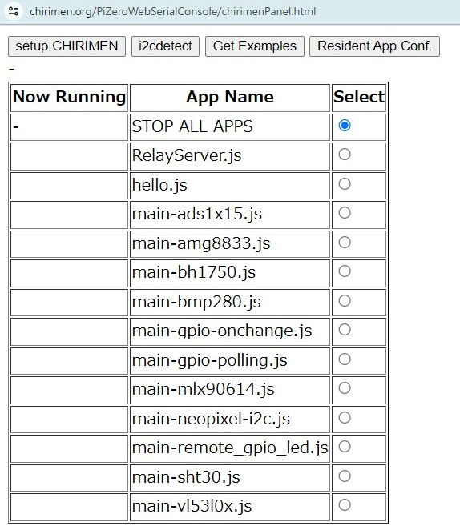
-
ターミナルウィンドの
[CHIRIMEN Panel]ボタン ⇒ CHIRIMEN Panel の[Resident App Conf.]ボタンを押します。- 専用画面の UI が使えるようになるまで、数秒かかります。
-
開発ディレクトリ
~/myApp内にある JavaScript コードが一覧表示されます。 -
各行には、常駐状態を示す
Now Running列、コードのファイル名を示すApp Name列、選択用チェックボックスのSelect列があります。Now Running欄には、現在常駐プログラム化しているコードの行にRUNNINGと表示されます（常駐プログラムがなければ、すべての行が空欄です）。Select欄のチェックボックスを選択すると、そのコードが常駐プログラム化されます（常駐プログラムは一つだけ指定できます）。- 設定が反映され、常駐状態が確認できるようになるまで、20秒ほどかかります。
- 常駐状態は
[Resident App Conf.]ボタンで再確認できます。 - 設定できたら、シャットダウンして PC との USB 接続も外します。
- シャットダウンコマンド:
sudo shutdown -h now
- シャットダウンコマンド:
- その後、PiZero をモバイルバッテリなどにつなぎ、独立して稼働させます。
- PiZero の緑色 LED の点滅が収まると、常駐プログラムはおおむね起動しています。
- その後、PC からリモートコントロールしてみましょう。
- 常駐状態は
- 設定が反映され、常駐状態が確認できるようになるまで、20秒ほどかかります。
- PC に接続しなおし、一番上の
STOP ALL APPSチェックボックスを選択すると、常駐プログラムを解除できます。
-
Note: 常駐化のツールには、他にも systemd のサービスユニット、openrc、cron、pm2、forever などがあります。Web でそれぞれの特徴を調べ、用途に合ったものを選んで設定してもよいでしょう。
AIアシスタントを活用する
コードの意味がわからない、あるいはエラーの原因がつかめない。 そんなとき、公式ドキュメントを一から読み返すのは手間がかかります。 CHIRIMENでは、そうした場面で質問できるAIアシスタント（DeepWiki）を用意しています。
DeepWikiとは？
DeepWiki は、GitHubリポジトリに特化したAI Q&Aプラットフォームです。 提供元は、自律型AIソフトウェアエンジニア「Devin」の開発で知られる Cognition Labs 社です。
ふつうのAIチャットに同じ質問をしても、学習時点の知識にもとづいたそれらしい答えが返ってくるだけで、実際のリポジトリの中身までは踏まえていないことがあります。 DeepWiki が採用しているのは、質問のたびにCHIRIMENの公式リポジトリ内のソースコードやドキュメントを検索し、その内容をもとに回答を生成する「合成知識ベース (Synthetic Knowledge Base)」、いわゆる「LLM Wiki」と呼ばれる仕組みです。 この仕組みのおかげで、WebI2CやWebGPIOといったCHIRIMEN固有のライブラリやサンプルコードに基づいた、的確な回答が返ってきます。
質問方法
使い方はシンプルです。 リンクを開き、日本語で質問を書き込むだけです。 公開リポジトリ向けに提供されているオープンな機能のため、アカウント登録は不要で、誰でも無料で利用できます。
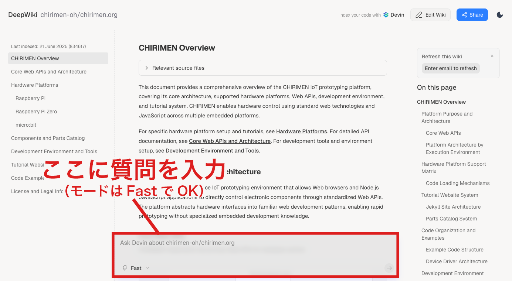
質問例
- 「LEDを3回点滅させるコードを書いて」
- 「SHT30で温度を取得するコードを書いて」
- 「このエラーの意味を教えて：（エラーメッセージをここに貼り付ける）」
※質問は日本語で構いません。
より的確な回答を引き出すためのコツ
質問のしかたひとつで、返ってくるコードの精度は変わります。 次の3点を意識すると、開発がスムーズに進みます。
1. 前提条件の具体化: 使いたいパーツの型番を正確に伝える
漠然と「温度センサー」と聞くよりも、手元にある部品の型番を伝えることで、そのデバイス用のアドレスや設定を含んだコードが返ってきます。
- 良い質問: 「BME280から温度と湿度を取得して、コンソールに表示するコードを書いて」
2. 実現したい動作の具体化
AIにお願いする時は、イメージを伝えるよりも「数値」や「条件」を明確にした方が、思い通りのコードが生成されやすくなります。
良い質問: 「取得した温度が30度を超えたら、コンソールに警告を出しつつ、GPIO 26に繋いだブザーを1秒間鳴らす処理を追加して」
3. 既存のサンプルコードをベースにアレンジ
チュートリアルにあるコードを自分なりに改造したいときにも便利です。
良い質問: 「チュートリアルの hello.js (Lチカのコード) を元にして、ボタンを押している間だけLEDが光るように書き換えて」
⚠️ AIを利用する上での注意点
AIは強力なサポートツールですが、万能ではありません。 うまく活用するには、次の2点を心に留めておく必要があります。
1. AIの回答が常に正しいとは限らない
AIは時折、存在しないコードを提案したり、間違った使い方を教えたりすることがあります。「指示通りにやったのに動かないな」と思ったら、AIの回答を鵜呑みにせず、CHIRIMENの公式チュートリアルやドキュメントを確認してみましょう。
2. ハードウェアの接続は自分の目で確認する
AIはコードを書くのは得意ですが、手元の物理的な配線を見ることはできません。GPIOのピン番号（どこに挿すか）や、センサーの電源（3.3Vか5Vか）といったハードウェアに関わる部分は、AIの回答だけを頼りにせず、必ずCHIRIMENのピンアウト図や部品の仕様書を確認してください。
9. 他のいろいろなデバイスを試してみる
- ターミナルウィンドウの
[CHIRIMEN Panel]ボタンを押すと、CHIRIMEN Panel の[Get Examples]ボタンにデバイスの一覧が表示され、その場で試せます。 - この一覧への直リンクはこちら(サンプル一覧)です。CHIRIMEN RPiZero を PC につないでいないときは、こちらを眺めてください。
また、Web GPIO や Web I2C で扱える外部デバイスの写真や様々なCHIRIMEN環境のサンプルコードの一覧があります。こちらも参考にしてください。 （CHIRIMEN はRaspberry Pi ZeroW 以外に、Raspberry Pi3, Pi4 や、micro:bit等でも使用できます）
9.1 応用センサーキットの使い方
応用センサーキットの一覧
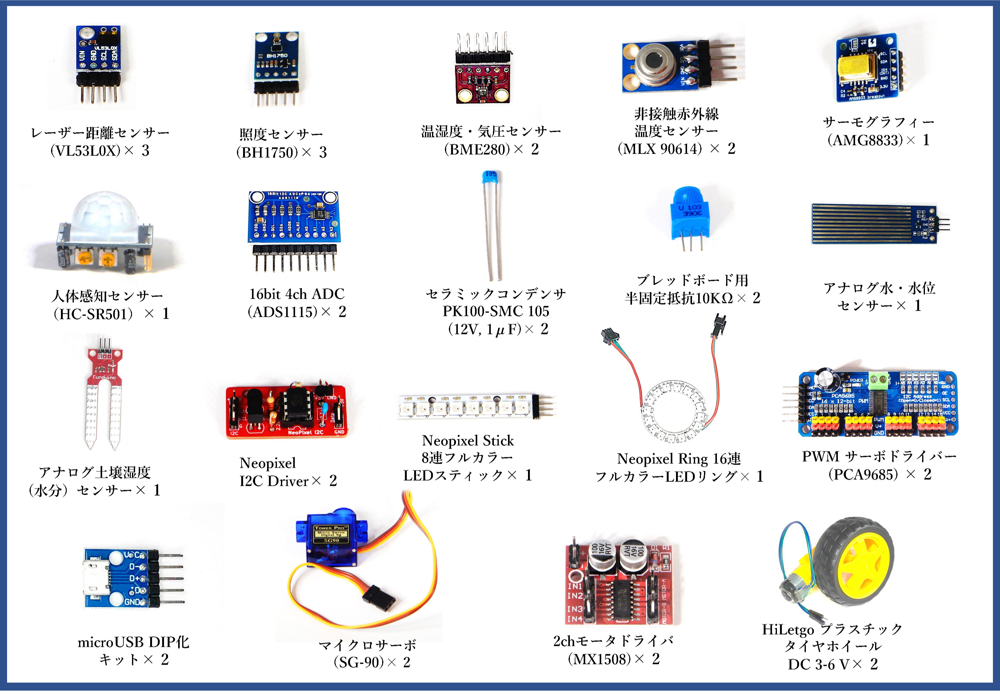
目次
- 単体で動作確認できるセンサーの使い方
- 距離センサー／照度センサー／温湿度・気圧センサー／非接触赤外線温度センサー／サーモグラフィー
- 人感センサーの使い方
- Neopixel LED の使い方
- アナログセンサーの使い方
- アクチュエーター（サーボモーター）の使い方
- アクチュエーター（DCモーター）の使い方
- RaspberryPi のカメラに関する注意
- 応用センサーキットは、ハッカソン等でアイディアを実装する際に使い勝手の良いセンサーを集めたキットです。
- CHIRIMEN チュートリアルで習得したスキルを使って、実際に動作させることが出来ます。
- 一部のセンサーは特性を知っておく必要があるため、その解説をします。
9.1.1 単体で動作確認できるセンサー
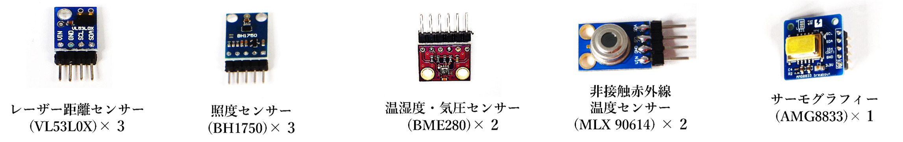
- I2C Examples の回路図とサンプルコードを使って、動作を試せます。
- センサー名のカッコ内は型番で、Examples の ID と同じ表記です。
- 上記のセンサーは、それぞれ単体で使えます。
回路図とプログラムサンプル
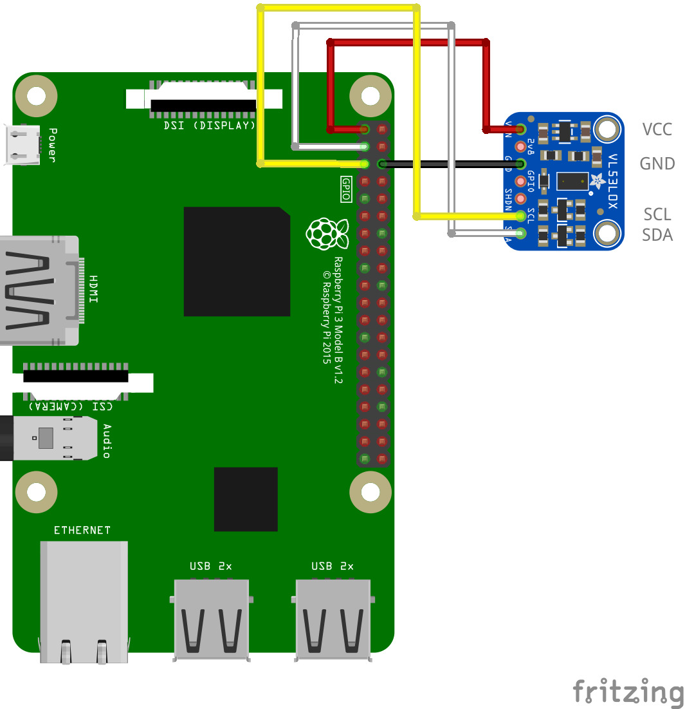
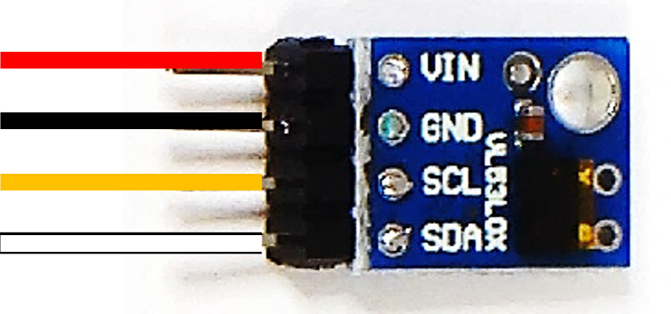
動作を確認するためのサンプルコードは CHIRIMENパネル から入手できます。
ブラウザでコードの中身を確認したい場合は、コードを確認する から確認できます。
- レーザー距離センサー ＞ ID：vl53l0x タイトル：距離センサ
- 照度センサー ＞ ID：bh1750 タイトル：照度センサ
- 温湿度・気圧センサー ＞ ID：bme280 タイトル：温度・湿度・気圧
- 非接触赤外線温度センサー ＞ ID：mlx90614 タイトル：赤外線温度センサ
- サーモグラフィー ＞ ID：amg8833 タイトル：サーモグラフィー
【注意】回路図と実物のセンサーは、製品によって形状が異なる場合があります。
- 実際の応用センサーキットに入っている距離センサーは、写真のものです。
- 写真は、レーザーセンサーを基板の表記に合わせて接続した例です。回路図と同じ色のジャンパーワイヤーで接続してください。
- I2C センサーは、例の図にある基板の 4 つのピン（VIN / GND / SCL / SDA）を接続するのが基本です。
回路図に描かれたセンサーの絵は実物と形が異なる場合がありますが、写真の部品と同じセンサー（同じチップ）を示しています。 形状が異なる場合は、実物の基板に印字された文字を確認し、回路図と同じ文字が書かれたピンに接続してください。
センサーによっては、接続しないピンがある場合もあります。 回路図に従って必要なピンだけを接続すればよく、すべてのピンを繋ぐ必要はありません。
9.1.2 人感センサーの使い方
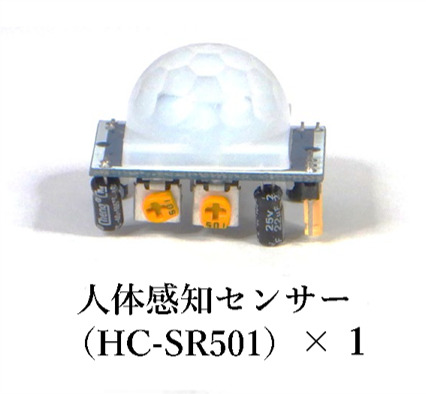
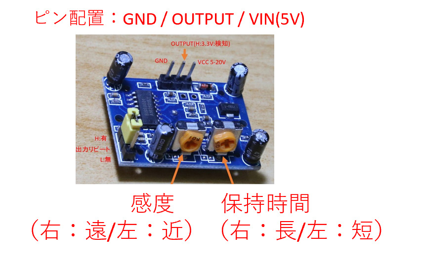
- 人感センサーは、半球体の部分で検知した赤外線によって人の動きや熱を捉え、オンオフするセンサーです。
- 人感センサーは GPIO センサーの一種で、チュートリアルのスイッチと同じ種類です。
- センサーには感度と保持時間を調整するつまみがあるので、調節しながらテストしてください。
- つまみの調整には精密ドライバーを使います。
- 人感センサーは広い範囲で反応するため、人のいない方向に向け、自分もセンサーからなるべく離れて動作確認してください。
- 動作確認の際は、保持時間を最短にすると調整しやすくなります。
回路図とプログラムサンプル
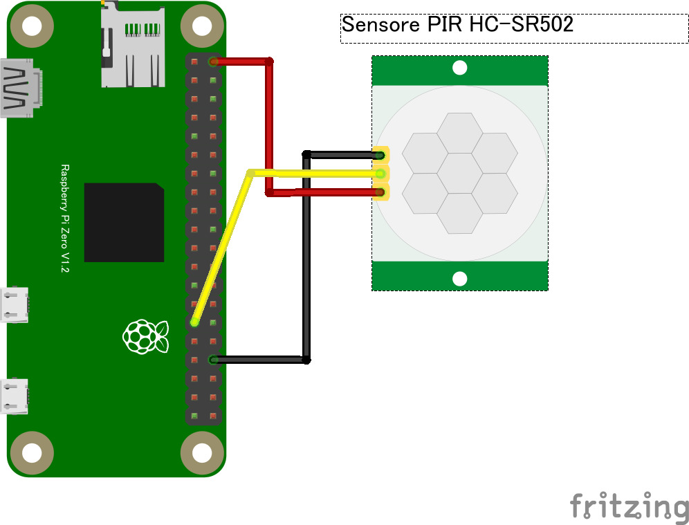
動作を確認するためのサンプルコードは CHIRIMENパネル から入手できます。
ブラウザでコードの中身を確認したい場合は、コードを確認する から確認できます。
【備考】
- 参考情報 ※CHIRIMEN Pi4 版
- サンプルコードは「スイッチ」のソースコードと共用できます。人感センサー（pir sensor）という名前ではサンプル一覧に掲載されていないため、注意してください。
- 「スイッチ 2」のソースコードでも動作します。こちらはセンサーの状態を逐一確認できるため、調整する際に便利です。
9.1.3 Neopixel LED の使い方
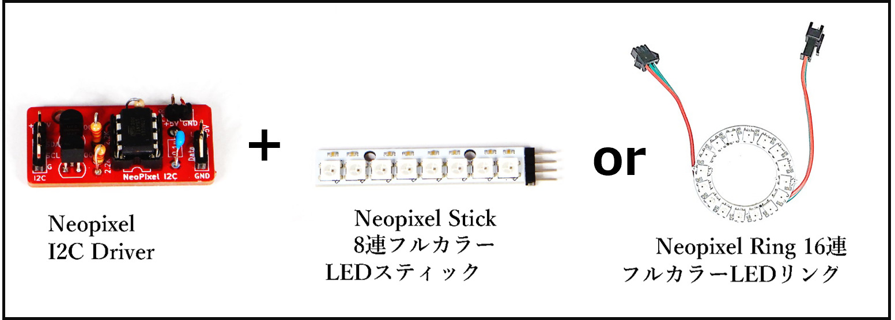
- Neopixel LED は、フルカラー LED です。チュートリアルで使ってきた LED と異なり、プログラムから複数の LED の点灯や色をそれぞれ制御できます。
- 接続には、Neopixel I2C Driver というオープンハードウェアのドライバーボードを利用します。
回路図とプログラムサンプル
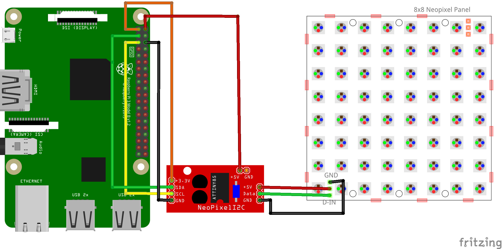
※ドライバと LED の接続は次のとおりです。 赤：VIN（3.3V）、黒：GND、緑：D-IN（DI） すでにケーブルが接続されている場合は、同系色のケーブル同士を繋げます。
動作を確認するためのサンプルコードは CHIRIMENパネル から入手できます。
ブラウザでコードの中身を確認したい場合は、コードを確認する から確認できます。
- NEOPIXEL LED（8 連 LED／16 連 LED） ＞ ID：neopixel-i2c タイトル：NEOPIXEL LED
【備考】
- 専用コントローラーボード Neopixel I2C Driver を使うと、接続を簡単に済ませられます。
- Neopixel I2C Driver はオープンソースハードで、市販品ではありません。
- Neopixel LED を使うときは、図のように赤色のドライバボードと NeoPixel LED をペアで用意して試してください。
- Neopixel LED には、丸形、棒型、マトリクス型、テープ型など、さまざまなサイズや形状の商品があります。
9.1.4 アナログセンサーの使い方
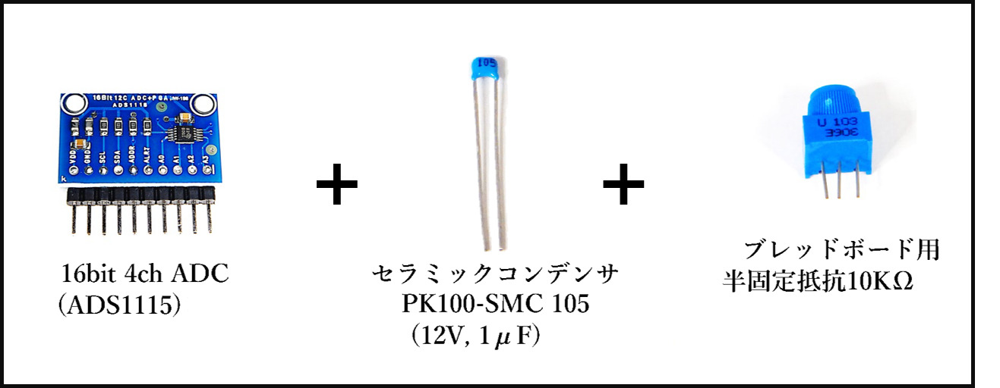
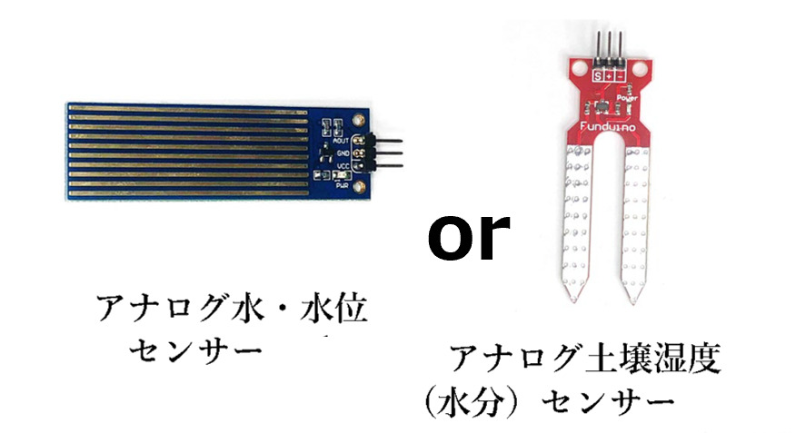
- アナログセンサーの値を取得するには、ADC（アナログデジタルコンバーター）を利用します。
- 応用センサーキットには、半固定抵抗（つまみの代わり）でアナログ値の変化を確認するサンプルと、水位センサー、土壌湿度センサーが含まれています。
回路図とプログラムサンプル
アナログボリュームの回路図（半固定抵抗利用）
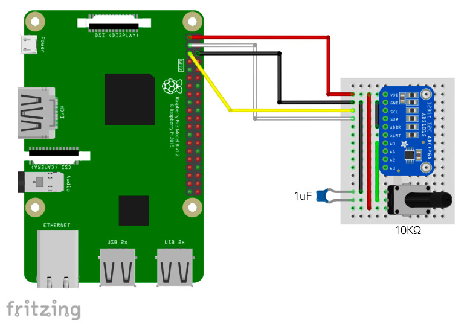
- アナログセンサーの利用には ADS1115 を使います。回路図のつまみには半固定抵抗 10KΩ を使用します。
動作確認用のサンプルコードは CHIRIMENパネル から入手できます。
ブラウザ上でコードの中身を見たい場合は コードを確認する から参照できます。
- アナログボリューム ＞ ID：ads1x15 タイトル：電圧測定（ADC）
【備考】
- サンプルコードは、アナログの値を電力に変換して表示します。
- 電力の変化量から必要な値を求めるには、プログラムでの計算が必要です。
- 水位センサー／土壌センサーを利用する前に、アナログボリュームで動作確認をしてください。
水位センサーの回路図
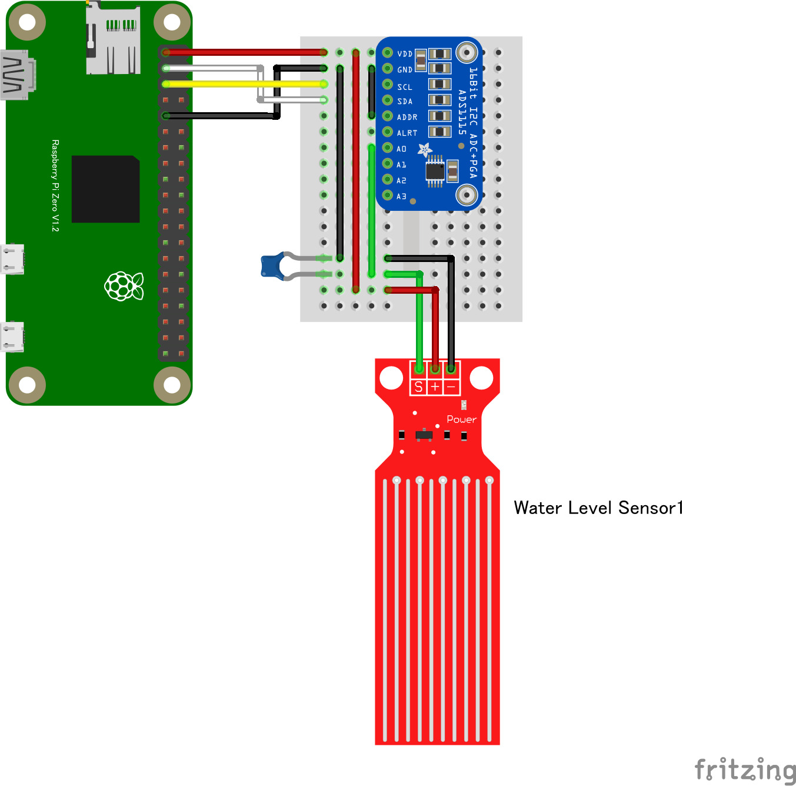
- 水位センサー、土壌湿度センサーもアナログセンサーです。ADS1115 と組み合わせて使います。
動作確認用のサンプルコードは CHIRIMENパネル から入手できます。
ブラウザ上でコードの中身を見たい場合は コードを確認する から参照できます。
- アナログ水位センサー／アナログ土壌センサー ＞ ID：ads1x15 タイトル：電圧測定（ADC）
【備考】
- 動作確認は、実際に水につけるか、濡れタオルで覆うことで行えます。
9.1.5 アクチュエーター（サーボモーター）の使い方
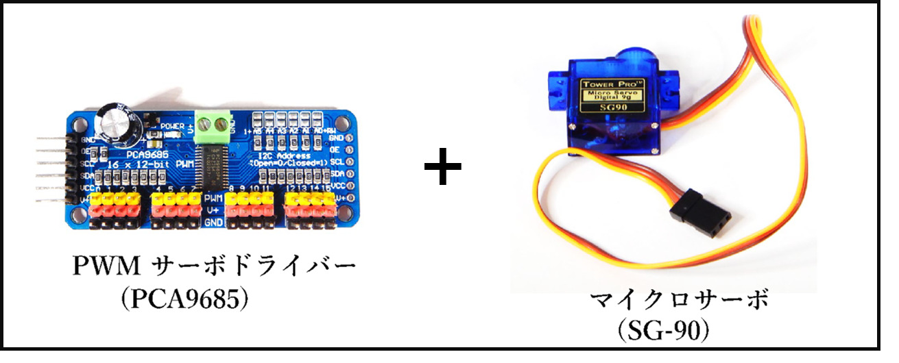
- モーターを使用する場合は、モータードライバーを経由して制御します。
- モーターを動かすには、外部から電力を取る必要があります。
回路図とプログラムサンプル
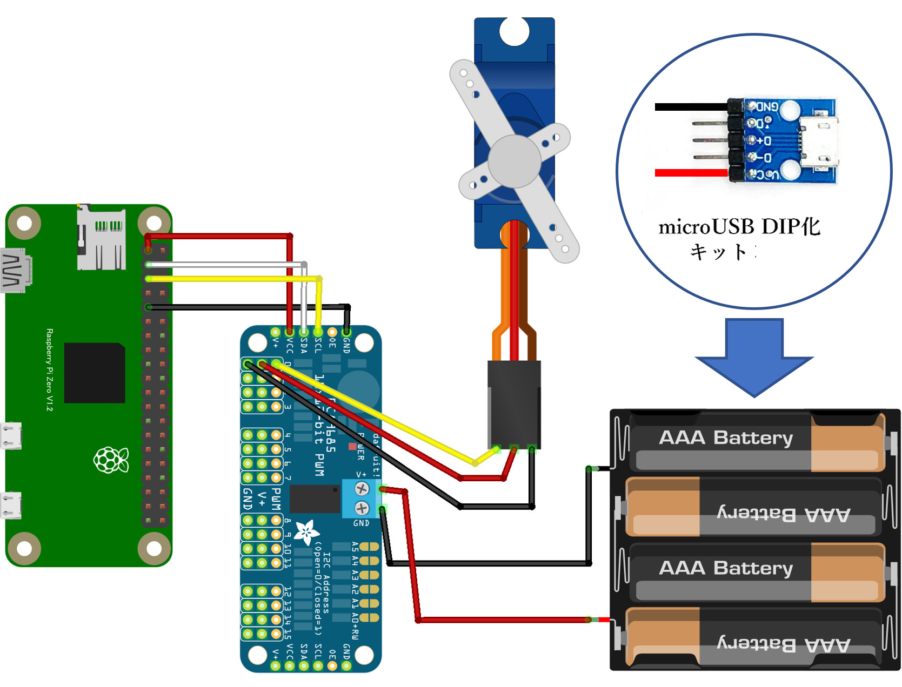
動作確認用のサンプルコードは CHIRIMENパネル から入手できます。
ブラウザ上でコードの中身を見たい場合は コードを確認する から参照できます。
- アクチュエーター（サーボモーター） ＞ ID：pca9685 タイトル：サーボモータ
【備考】
- 給電方法には、電池ボックス、USB DIP 化キットを使ったモバイルバッテリー、電源モジュールを使った AC アダプタなどがあります。
- サーボドライバーの給電接続には精密ドライバーを使用します。
モバイルバッテリーの利用方法
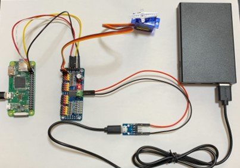
- microUSB DIP 化キットを使用すると、モバイルバッテリーを電池ボックスとして使えます。
- 電源として利用するだけであれば、VIN と GND の 2 ヶ所をジャンパーワイヤーで接続すれば使えます。
PiZero から給電する回路図
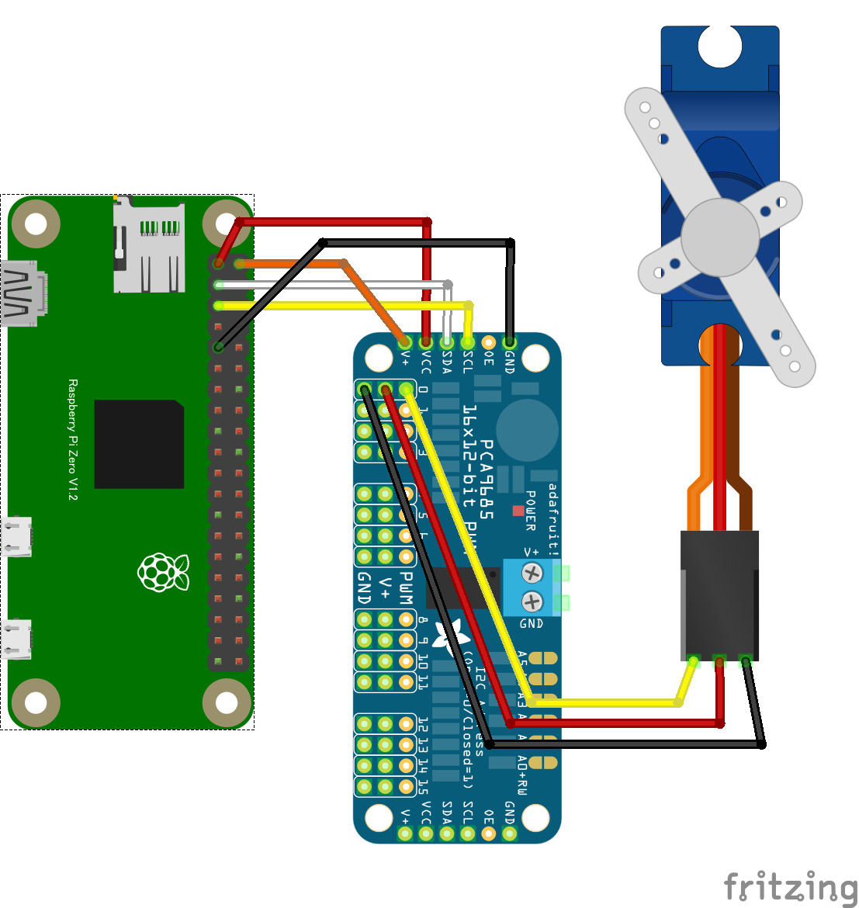
- 低消費電力のモーター（例：SG-90）1 個であれば、RasPi Zero からの電力供給だけで動作する場合もあります。
9.1.6 アクチュエーター（DC モーター）の使い方
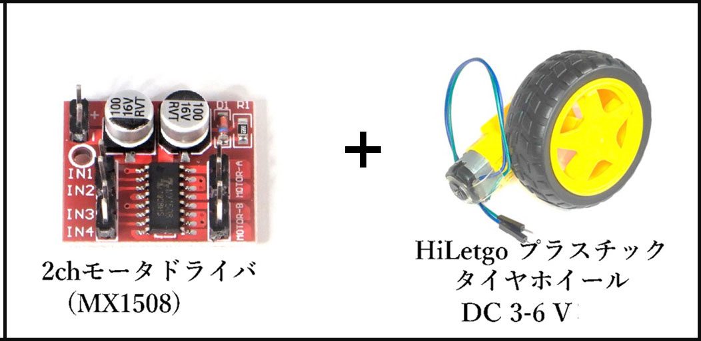
- モーターを使用する場合は、モータードライバーを経由して制御します。
- モーターを動かすには、外部から電力を取る必要があります。
- このサンプルでは、PiZero から外部電力を給電しています。
回路図とプログラムサンプル
hbridge1 の回路図（MX1508 利用）
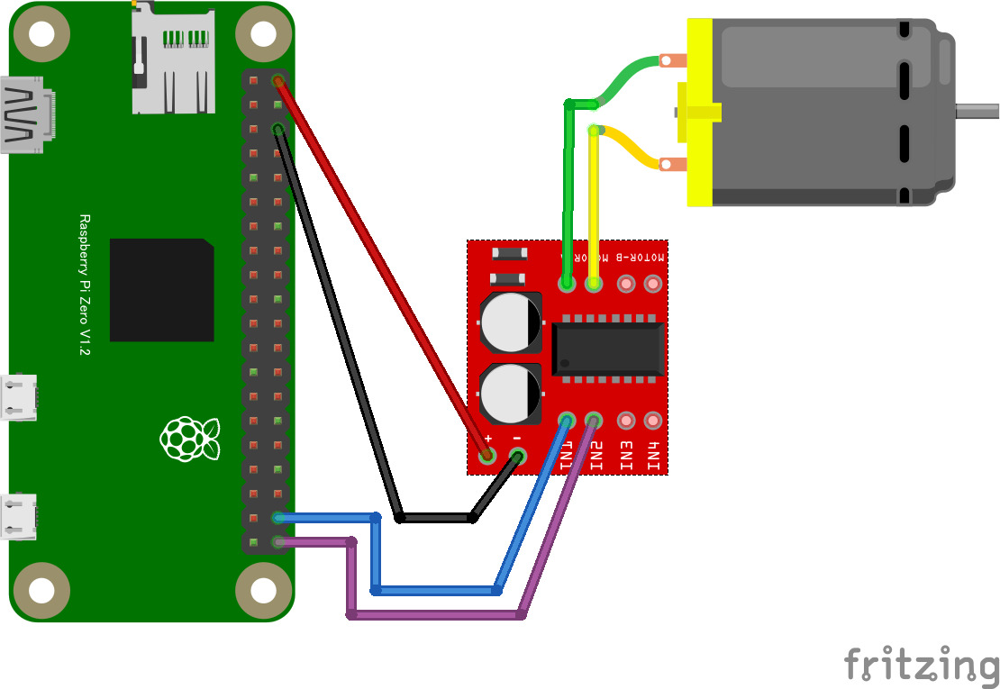
- このサンプルは GPIO Examples に含まれています。
動作確認用のサンプルコードは CHIRIMENパネル から入手できます。
ブラウザ上でコードの中身を見たい場合は コードを確認する から参照できます。
- アクチュエーター（DC モーター） ＞ ID：hbridge1 タイトル：モータ正転・逆転制御
【備考】
- L298N と同様に動作する MX1508 を使って接続した回路図を掲載します。
- モーターの動作にジャンパーワイヤーなどを巻き込まないよう、動作前にモーター周りを確認してください。
9.1.7 アクチュエーター（DC モーター）の使い方（PWM 駆動）
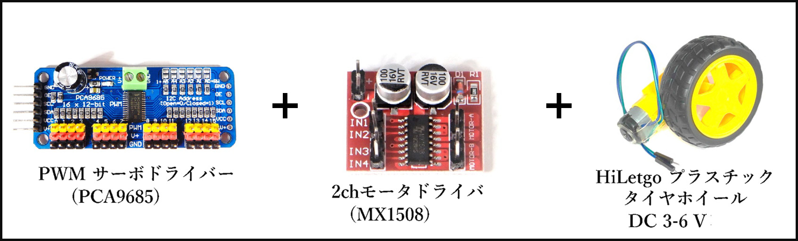
- モーターを使用する場合は、モータードライバーを経由して制御します。
- モーターを動かすには、外部から電力を取る必要があります。
回路図とプログラムサンプル
hbridge2-pca9685pwm の回路図（MX1508 利用）
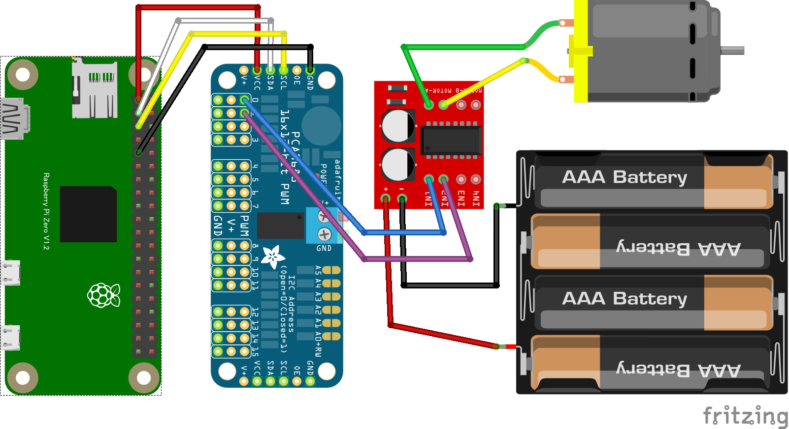
- このサンプルは I2C Examples に含まれています。
動作確認用のサンプルコードは CHIRIMENパネル から入手できます。
ブラウザ上でコードの中身を見たい場合は コードを確認する から参照できます。
- アクチュエーター（DC モーター） ＞ ID：hbridge2-pca9685pwm タイトル：モータ正転・逆転・速度制御
【備考】
- PWM サーボドライバーと組み合わせると、PWM 駆動が可能になります。
- モーターの回転速度も PWM で制御できるので、加速や減速も行えます。
- 動作させる前に、モーターがジャンパーワイヤーなどを巻き込まないよう注意してください。
- 電池は USB DIP を使用してモバイルバッテリーに変えることもできます。
（参考）モバイルバッテリーの利用方法
- microUSB DIP 化キットを使用すると、モバイルバッテリーを電池ボックスとして使えます。
- 電源として利用するだけであれば、VIN と GND の 2 ヶ所をジャンパーワイヤーで接続すれば使えます。
9.1.8 RaspberryPi のカメラに関する注意
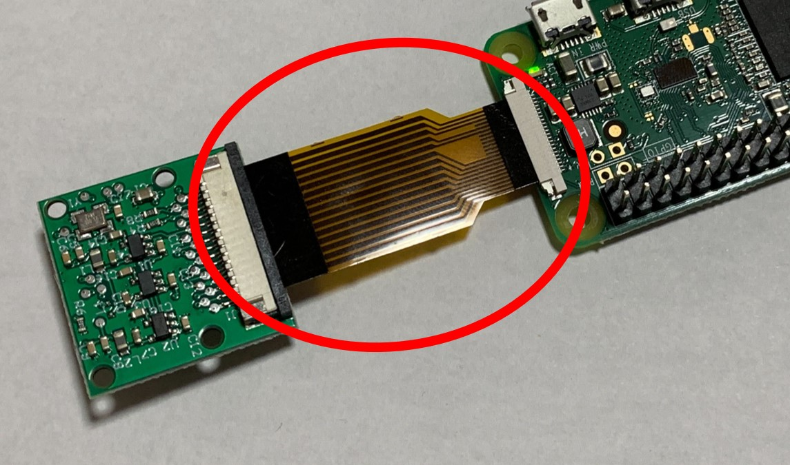
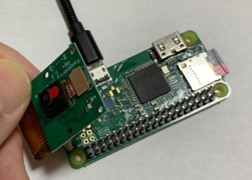
- 接続端子とフラットケーブルは壊れやすい
- 無理に引っ張らない
- 折り曲げないように注意する
Note
利用可能なカメラモジュールは v1、v3 です。 また Raspberry Pi Zero 用 CHIRIMEN v1.4.0 未満をお使いの場合、Camera Module v3 には未対応です。 Raspberry Pi Zero 用 CHIRIMEN v1.4.0 以上 をお使いください。
カメラの動作テスト
以下のコマンドで画像ファイルが保存されます:
raspistill -v --width 640 --height 480 -o test.jpg
Note
Raspberry Pi Zero 用 CHIRIMEN v1.4.0 以上 をお使いの場合、rpicam-still --list-camerasコマンドで利用可能なカメラの一覧を表示可能です:$ rpicam-still --list-cameras Available cameras ----------------- 0 : ov5647 [2592x1944 10-bit GBRG] (/base/soc/i2c0mux/i2c@1/ov5647@36) Modes: 'SGBRG10_CSI2P' : 640x480 [58.92 fps - (16, 0)/2560x1920 crop] 1296x972 [43.25 fps - (0, 0)/2592x1944 crop] 1920x1080 [30.62 fps - (348, 434)/1928x1080 crop] 2592x1944 [15.63 fps - (0, 0)/2592x1944 crop]
10. 付録
予備知識
CHIRIMEN for Raspberry Pi を利用する際に役立つ予備知識と、周辺ツールの使い方をまとめたドキュメント集です。
- GitHub ハンズオン
- GitHub の基本的な使い方を学べるハンズオン資料です。
- CodeSandbox ガイド
- ブラウザ上で開発できる CodeSandbox の使い方を解説しています。
- JavaScript 初学者向け資料集
- JavaScript 1 Day 講習資料や JavaScript 本格入門書、チートシートなどをまとめています。
このほか、電子工作など一般的な知識については 予備知識・資料集 や 共通資料集 を参照してください。
10.1 CHIRIMEN ブラウザー版との差異
| CHIRIMEN ブラウザー版 | Node.js |
|---|---|
| ライブラリ、ドライバーはhtmlで読み込む | jsの中で直接読み込む |
|
|
|
|
Sleep関数を宣言 |
10.2 CHIRIMEN環境の任意のディレクトリへのセットアップ
以下の手順で、~/myApp ディレクトリ以外の場所にも CHIRIMEN 環境を設定できます。
mkdir [自分用の作業ディレクトリ](mkdir コマンドとは)cd [自分用の作業ディレクトリ](cdコマンドとは)wget https://tutorial.chirimen.org/pizero/package.json(wgetコマンドとは)wget https://www.chirimen.org/remote-connection/js/beta/RelayServer.js(RelayServer.jsを使う場合)npm install(npmとは)
11. 共通資料集
CHIRIMEN for PiZero チュートリアルで使われている用語について、本編の解説よりも踏み込んで扱う資料集です。 初めて CHIRIMEN に触れる方には読まなくても支障のない情報が大半ですが、IoT開発をより深く学びたい方は目を通してみてください。 （チュートリアルの各ページから、この情報にリンクしています）
11.1 CHIRIMEN
電子パーツをプログラムで制御するには、C言語やPython向けの専用SDK、あるいはボードごとに異なる開発環境を新しく覚える必要がある、と身構えている人は少なくないでしょう。CHIRIMEN は、その手間を要求しません。Webの標準技術、つまりブラウザやNode.js等で実行できるJavaScriptだけで電子パーツを制御し、フィジカルコンピューティングやIoTシステムを開発できるプロトタイピング環境、それがCHIRIMENです。
デジタルのソフトとフィジカルなハードをWWW上で連携させる仕組みをWeb標準技術とJavaScriptだけで容易に実現できます。
CHIRIMENについて
CHIRIMENのメリット
標準技術だけで開発できることは、具体的に何のメリットがあるのでしょうか。理由は大きく二つあります。
- 広く使われている標準技術を学習できるので
- 学習のハードルが低い
- 得たスキルが広く長く役立つ
- インターネットでノウハウを検索しやすい
- Web標準技術を活用するので
- WWWのサービスと簡単に連携できる
- ユーザーインターフェースやコンテンツを簡単に作れる
- Webブラウザを使って開発できる
11.2 ハードウェア・デバイス
11.2.1 LED
LED の順方向電圧
LED の順方向電圧は色によって異なります。赤色 LED は 1.8V 程度、青色 LED は 3.1V 程度です。
11.2.2 ブレッドボード
- ブレッドボードの使い方（サンハヤト社）
| 外観 | 内部の接続状態 |
|---|---|
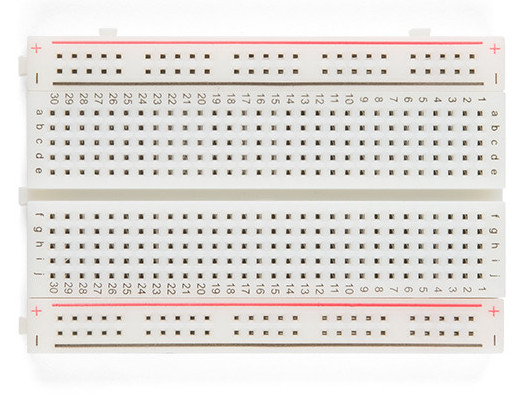 | 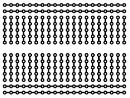 |
-
+と-のライン（上下の横のピン列）が無いブレッドボードもあります（CHIRIMEN Starter Kitのブレッドボードにはありません）。
-
配線に使うケーブルの色に厳密な決まりはありませんが、一般的にGNDは黒（や黒っぽい色）、電源（VCC, +3.3V, +5V）には赤（や赤っぽい色）が用いられます。配線間違いを防ぐためにもなるべく合わせましょう。
-
抵抗やLEDの足（リード線）は手で簡単に曲げられます。ブレッドボードに差し込めるように適当に成形してください。
11.2.3 抵抗値の読み方
11.2.4 MOSFETによる大電力制御
GPIO の制約事項
LEDが数個ならそのままGPIOにつないで問題なく光る、という体験をすると、モーターも同じように動かせるはずだと思い込みたくなります。実際には、Raspberry Pi の GPIO ポートには、全体で流せる電流の上限が決められています。
- 合計 50mA
- 3.3 V
小さな LED 数個であればこの条件内に収まりますが、モーターやソレノイド、パワー LED など電流を多く消費するデバイスは、直接接続して使うことができません。
MOSFET とは
電流を多く必要とするデバイスを動かすには、GPIOのわずかな電流で、別の大きな電流をオンオフする仕組みが要ります。それを担うのがMOSFETです。電界効果トランジスタ (FET) の一種で、主にスイッチング素子として利用される部品です。小さな電圧の変更で、大きな電流や電圧のオンオフを切り替えられます。
今回は Nch MOSFET「2SK4017」を利用します。
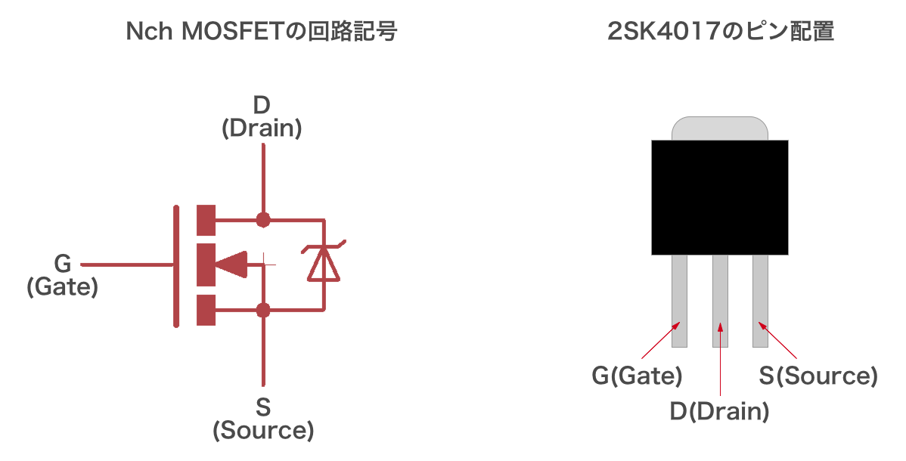
プルダウンの GPIO ポートを使った典型的な回路は、以下のようになります。
電源
回路図の GND 端子は、Raspberry Pi と DC 負荷用電源とで共通です。ここだけを見ると、VCC 端子も Raspberry Pi の 3.3V や 5V 端子から取れそうに思えます。ですが、VCC 端子は基本的にはそれらの端子とは別物です。DC 負荷用には、Raspberry Pi とは別に電源を用意するのが望ましいでしょう。
ミニモータを使った作例では、その消費電力が十分小さいので、例外的に Raspberry Pi の 5V 端子から電力を供給しています。
11.3 JavaScript
JavaScript は標準化されたプログラミング言語であり、ウェブブラウザを代表的な実行環境（プログラムコードを解釈して動作させるシステムを指します）とします。 CHIRIMEN では、Raspberry Pi 版と micro:bit 版がウェブブラウザを実行環境として使用します。 一方、Raspberry Pi Zero 版は Node.js を実行環境として使用します。 別名として ECMAScript と呼ばれることもあります。
JavaScript の基礎
JavaScript に慣れていない人は、「JavaScript 初学者向け資料集」を参考にしてください。
- その他の情報：予備知識・資料集の情報
11.3.1 JavaScriptコードとライブラリの読み込み
ウェブアプリはHTMLから読み込む
Raspberry Pi Zero 版以外の CHIRIMEN では、プログラムの起点がHTMLファイルです（ウェブアプリ）。ブラウザはまずHTMLファイルを読み込み、そこに書かれた内容にしたがって動き出します。作ったコードや必要なライブラリの読み込みも、基本的にはすべてこのHTMLの中で指定することになります(javascript Moduleを有効化している場合は、JavaScriptコードの中でさらにjsライブラリを読み込むこともあります)。
具体的には <script ...></script> の部分がその指定です。ここでは polyfill.js という JavaScript ライブラリを読み込んでいます。これは Web GPIO API と Web I2C API という、W3C でドラフト提案中の 2 つの API への Polyfill (新しい API を未実装のブラウザでも同じコードが書けるようにするためのライブラリ) です。これを最初に読み込んでおくことで、それ以降のコードから GPIO や I2C を操作する JavaScript API が使えるようになります。
次の行にある main.js が、実際のプログラム本体です。
Node.js (CHIRIMEN Raspberry Pi Zero版)
Raspberry Pi Zero版のコードにHTMLファイルは登場しません。プログラムの起点そのものが、自分の書いたJavaScriptコードになるからです。ブラウザの代わりに、JavaScriptコードだけを解釈するNode.jsというソフト（JavaScript インタープリタ）に、コードを直接読み込ませて実行します。
とはいえ、CHIRIMEN環境に必要なライブラリやI2Cデバイスのドライバ(後述)を読み込む手段は必要です。HTMLがない以上、この読み込みは次の ECMA Script Module という仕組みが担います。
JavaScript Module (ECMA Script Module)
- ウェブアプリでのModule有効化：HTMLのscript要素でJavaScriptを読み込むときに
type="module"プロパティを設定します。<script type="module" src="main.js"></script>
- 外部ライブラリの読み込み：import文を使います。
import {RelayServer} from "https://www.chirimen.org/remote-connection/js/beta/RelayServer.js";
- エクスポートの指定：importされるライブラリ側には、importできるオブジェクトを指定するexport文を記述しておきます。
export {RelayServer};
- 例を見てみる
- Mozilla Developer Networkの解説
11.3.2 非同期処理
物理デバイスの応答にせよ、ネットワーク通信にせよ、結果が返ってくるまでには時間がかかります。その間、ブラウザやNode.jsを止めてしまうわけにはいきません。だからCHIRIMENのコードは、応答を待つ処理を非同期処理として書きます。
本チュートリアルではこれを async 関数 で記述しています。async 関数による非同期処理に慣れていない人は、こちらの資料「非同期処理 (async await 版)」 も参考にしてください。非同期処理についてより詳しくは JS Primer の非同期処理説明ページ をご覧ください。
非同期処理は、本来ならそれなりに難しい概念です。ですが本チュートリアルの範囲では、次の2つのルールさえ守ればコードは書けます:
- 非同期関数の呼び出し時には前に
awaitを付けて呼び出す- 非同期関数呼び出し前に
awaitを付けると、その処理の完了を待ってから次のコードが実行されます - GPIO/I2C の初期化、ポートの設定などは非同期処理なので
awaitキーワードを付けて呼び出します
- 非同期関数呼び出し前に
- 非同期処理を含む関数は前に
asyncを付けて非同期関数として定義するasync function 関数名() { ... }のように頭にasyncを付けるだけで非同期関数になります
この2つを守らないとどうなるでしょうか。await なしで非同期関数を呼び出すと、返ってくるのは処理結果ではなく Promise オブジェクトです。コードの見た目は上から下へ素直に進んでいるのに、実行順序はそのとおりにはなりません。たとえばポートの初期化を await なしで呼んでしまうと、初期化が終わる前に次の行が動き出し、まだ使えないハードウェアを操作しようとして失敗する、といったことが起こります。
ハードウェアを制御する処理は必ず非同期で呼び出し、その処理を含む関数もまた非同期にする。この一点さえ決めておけば、コードの実行順序は上から下に見たとおりに進み、読み書きに迷うことはありません。
11.4 GPIO
GPIOとは
GPIO は「General-purpose input/output」の略で、汎用的な入出力インタフェースを指します。
Raspi には 40 本のピンヘッダが実装されており、ここから GPIO を利用できます。
CHIRIMEN Raspi、Raspi Zero では、この 40 本のうち下記緑色で示したピン(合計 17 本)が利用可能です。CHIRIMEN micro:bit では利用できる端子が異なり、こちらのページにまとめられています。
Raspi や micro:bit の GPIO 端子は、GND との間に 0V または 3.3V の電圧をかける(出力)か、逆にその電圧を検知する(入力)かのどちらかで動作します。LED は数 mA の電流を流すだけで点灯する部品です。だから、GPIO 端子にかける電圧を 3.3V(点灯) と 0V(消灯) の間で切り替えるだけで、L チカが実現できます。
詳しくはこちらのサイトの解説にまとまっています。
Raspberry Piのピン配置図
Raspberry Pi Zeroのピン配置図
端子の配列は、Raspberry Pi と同じです。
micro:bitのピン配置図

プルアップ(PU)、プルダウン(PD)
GPIO ポートを入力モードで使うとき、何も接続されていない解放状態(電気的に切り離された状態)でも、ポートは 0 か 1 かの値を返します。この値をあらかじめ決めておく仕組みが、プルアップとプルダウンです。プルアップに設定されたポートは 1 を、プルダウンに設定されたポートは 0 を返します。Raspberry Pi のピン配置図に記載されている PU、PD は、各ピンがどちらに設定されているかを示す表記です。micro:bit ではすべてのピンがプルダウンに設定されていますが、GPIO ポートの初期化時にプルアップへ変更することもできます。
11.4.1 GPIOポートの初期化と出力処理
GPIOポートの初期化
このコードで最初に呼び出されるのが await navigator.requestGPIOAccess() です。
先に触れた Web GPIO API の関数で、GPIO にアクセスするためのインタフェース gpioAccess を取得しています。
const gpioAccess = await navigator.requestGPIOAccess(); // GPIO を操作する
呼び出しに await が付いているのは、requestGPIOAccess() が非同期関数であり、GPIO へのアクセス許可が下りるまで処理を待つ必要があるからです。await を使うコードを含む関数は、この後の main() のように async 接頭詞付きの非同期関数として定義しなければなりません。
GPIOPort の出力処理
GPIO の出力機能を使うには、まず操作対象のポートを取得します。
const port = gpioAccess.ports.get(26); // 26 番ポートを操作する
gpioAccess.ports.get(26) は、GPIO の 26 番ポートにアクセスするためのオブジェクトを返します。ただしこの時点では、まだポートは入力にも出力にも使える状態になっていません。
await port.export("out"); // ポートを出力モードに設定
await port.export("out") で 26 番ポートを「出力設定」にすると、LED にかける電圧を切り替えられるようになります。
// 無限ループ
while (true) {
// 1秒間隔で LED が点滅します。
await port.write(1); // LED を点灯
await sleep(1000); // 1000 ms (1秒) 待機
await port.write(0); // LED を消灯
await sleep(1000); // 1000 ms (1秒) 待機
}
あとは電圧の切り替えを繰り返すだけです。await port.write(1) と await port.write(0) を交互に呼び出し、GPIO 26 番に加える電圧を 3.3V → 0V → 3.3V → 0V → … と切り替えています。合間に挟んだ await sleep(1000) が 1000 ms (1 秒) の待ち時間を作り、切り替えの間隔を 1 秒に保っています。
LED は、一定以上の電圧を加えて電流を流すと点灯する部品です。3.3 V を加えれば点灯し、0 V に落とせば消灯します。このループがしているのは、その点灯と消灯をひたすら繰り返すことだけです。
サンプルコードを編集してみよう
- 点滅周期を速くしたり遅くしたりしてみる（
sleep()の引数を変更） - 点灯する時間と消灯する時間を変えてみる（同上）
- GPIO ポートを別のポートに変え、配線もあわせて変えてみる（
gpioAccess.ports.getの引数を変更）
11.4.2 GPIOPortの入力処理（onchange）
GPIO ポートに繋いだスイッチやセンサーの状態を取得するには、GPIO の入力機能を使います。出力と違って、入力には onchange とポーリングという二つの方法があります。まずは onchange から見ていきます。
onchange編
GPIO ポートの値が変化するたびに、指定した関数が実行されるコードです。
async function main() {
const button = document.getElementById("button");
const ledView = document.getElementById("ledView");
const gpioAccess = await navigator.requestGPIOAccess();
const ledPort = gpioAccess.ports.get(26); // LED の GPIO ポート番号
await ledPort.export("out");
const switchPort = gpioAccess.ports.get(5); // タクトスイッチの GPIO ポート番号
await switchPort.export("in");
async function light(lit) {
await ledPort.write(lit ? 1 : 0);
const color = lit ? "red" : "black";
ledView.style.backgroundColor = color;
}
button.onmousedown = async function() {
await light(true);
};
button.onmouseup = async function() {
await light(false);
};
// Pull-up なので押したとき 0、それ以外では 1 が得られる
switchPort.onchange = async function(state) {
const lit = state === 0;
await light(lit);
};
}
main();
port.onchange は、入力モードの GPIO ポートに「状態が変化したときに呼び出す関数」を設定する機能です。このように呼び出される関数をコールバック関数と呼びます。値を定期的に読みに行く port.read() を使ったポーリングのコード（後述）と異なり、自分でポーリング処理を書く必要がなくコードも簡潔になりますが、呼ばれるのは値が変化した瞬間だけなので、現在の値をいつでも取得したい用途にはあまり向きません。
11.4.3 GPIOPortの入力処理（ポーリング）
単純入力＋ポーリング
GPIO ポートの値を読み取る関数は、呼び出された瞬間の状態を一回だけ返します。では、スイッチが押されたことをどう検知すればよいのでしょうか。答えは、この一回きりの読み取りと、後述するポーリングを組み合わせることにあります。
ポーリングとは
入力や値取得のための基本的な関数は、たいてい一回きりの値しか返しません。指定した瞬間の状態を読み取ったら、それで処理は終わりです。値の変化を追いたいなら、この一回きりの読み取りを自分で繰り返すしかありません。無限ループの中に読み取り処理を置き、一定間隔で呼び出し続けることで、変化を検知します。この手法は一般にポーリングと呼ばれます（wikipedia:ポーリング）。 ポーリングが使われるのは、センサーの入力に限りません。たとえば電子メールの着信通知も、メールサーバに着信数を定期的に問い合わせることで実現されている場合が多く、ネットワークサービス全般で広く使われている手法です。
GPIOの単純入力関数
GPIO ポートの状態を読み込むだけなら、port.read() を呼ぶだけで済みます。
port.read() で GPIO を読み込むコードは次のように書けます:
const gpioAccess = await navigator.requestGPIOAccess();
const switchPort = gpioAccess.ports.get(5); // GPIO ポート 5 番を取得
await switchPort.export("in"); // 「入力モード」に
const state = await switchPort.read(); // GPIO ポート 5 番に接続したスイッチの状態を読み込む
await port.export()
port.export("in") は、GPIO ポートを「入力モード」で初期化する呼び出しです。入力モードは、ポートにかかる電圧を Web アプリ側から読み取りたいときに使います。初期化は非同期処理なので、await で完了を待つ必要があります。
await port.read()
port.read() は、入力モードに設定した GPIO ポートの現時点の状態を読み取ります。これも非同期処理なので、await で完了を待つ必要があります。
ポーリングルーチン
ここまでのコードで読み取れるのは、呼び出した瞬間の状態一回分だけです。スイッチが押されたかどうかを監視するには、これでは足りません。そこで await port.read() を一定間隔で繰り返し呼び出し、GPIO ポートの状態を監視するポーリングのルーチンを組みます。
const gpioAccess = await navigator.requestGPIOAccess();
const switchPort = gpioAccess.ports.get(5);
await switchPort.export("in");
// 無限ループ
while (true) {
const state = await switchPort.read(); /
//
// ここにswitchの状態による処理を書き足す
//
await sleep(100); // 100 ms 待機
}
11.5 I2C
I2Cの概要
I2C は、2線式の同期式シリアル通信インタフェースです。 「アイ・スクエア・シー」または「アイ・ツー・シー」と読みます。 通信に使うのは、SDA（シリアルデータ）とSCL（シリアルクロック）の2本の線だけです。
上の図のように、SDA、SCLの2本は複数のデバイスで共有されており、これを「I2Cバス」と呼びます。 同じバスにいるのは、マスターとスレーブです。 通信を持ちかけられるのはマスター側だけで、スレーブの側からマスターへ要求を送ることはできません。
本チュートリアルの範囲でいえば、マスターはCHIRIMEN環境を動かすボードコンピュータであり、そこに接続するセンサーやアクチュエータがスレーブにあたります。 実際に使えるI2Cデバイスの一例として、こちらに紹介されているものをご覧ください。
1本のバスに複数のスレーブがぶら下がっていて、マスターはどうやって相手を選んでいるのでしょうか。 鍵になるのが、スレーブごとに持つ「SlaveAddress（スレーブアドレス）」です。 マスターは通信のたびにこのアドレスを指定するため、同じI2Cバス上に同じSlaveAddressのスレーブを複数つなぐことはできません。 I2Cデバイスの実体は小型のICチップであり、製品によってはSlaveAddressがあらかじめ固定されています。
デバイス同士が同一基板上にない場合は、SDA、SCLの2本に電源とGNDを加えた、合計4本のケーブルで接続するのが一般的です。 電源電圧は、接続するデバイスの仕様に合わせる必要があります。
11.5.1 各種ボードの I2C端子
Raspberry Pi の I2C端子
下図のSCL, SDAがI2C端子です（黄色の端子）。
Raspberry Pi Zero の I2C端子
Raspberry PiのI2C端子と同じ配列です。
micro:bit の I2C端子
下図のSCL, SDAがI2C端子です（P19, P20 ～ オレンジ色I2C1のグループ）。
11.5.2 I2C の詳細情報とポイント
I2C に関する参考資料
I2C の詳細は、次の資料を参照してください。
I2C の要点
I2C の概要として、次の点を押さえておきましょう。
- I2C バスには複数のデバイスが接続される
- I2C デバイスにはマスターとスレーブがある
- I2C では、マスターからスレーブへ通信要求が行われる
- I2C スレーブは SlaveAddress（スレーブアドレス）を持つ
- 同じ I2C バスに、同じ SlaveAddress のデバイスは接続できない
11.5.3 WebI2C とデバイスドライバ
CHIRIMENでは、GPIOインターフェースを「Web GPIO」と呼ぶAPIで使ってきました。 I2Cインターフェースに接続したスレーブデバイスも、Web I2C APIと呼ぶAPIを通して使用できます。
ただし、I2Cのスレーブデバイスは、GPIOの先につながる単純なデバイスと比べてずっと複雑な機能を持っています。 中身は実質的に極小のコンピュータであり、I2Cを通してデバイス専用のコマンドやデータをやり取り（通信）することで、固有の機能を引き出す仕組みになっています。 こうしたコードを自分で書くには、デバイスごとのデータシートを読み込む必要があり、これはかなりの手間です。 そこで、データシートを読み込まなくてもデバイスを使えるよう、ライブラリ（デバイスドライバ）があらかじめ用意されています。
デバイスドライバが用意されているI2Cデバイスのリスト
デバイスドライバが用意され簡単に利用できるI2Cデバイスのリスト
比較的安価でよく利用される、30種類ほどのデバイス向けのドライバが用意されています。
11.6 IoT
これまでのチュートリアルで扱ってきたのは、いずれもコンピュータに直接つながったデバイスを使うシステムでした。 このような形態を「スタンドアロン」と呼びます。
ウェブブラウザを使っていたのだから、インターネットを活用したシステムだと思うかもしれません。 実際には、そうではありませんでした。 ここまで作ってきたのは、ウェブの重要な機能である、インターネット上の情報基盤（WWW）を使わないシステムです（開発環境としてはGitHubやCodeSandboxなど、WWW上の情報サービスを利用してはいます）。
このようにインターネットを活用するシステムを、IoT（Internet of Things の略）と呼びます。 ただし、PCやスマホで使うふつうのウェブサービスはIoTとは呼ばれません。 IoTと呼ばれるのは、チュートリアルで学んだようなセンサーやアクチュエータがシステムに組み込まれ、物理的なモノと相互作用するものに限られます。 （なお、WWWを使わず、ネットワークとしてのインターネット部分だけを使ったものもIoTと呼ばれます。詳しくは wiki や、こちらの資料なども参考にしてください）
11.6.1 webSocketとpub/sub services
システム構成
上の図は、今回のチュートリアルで作るIoTシステムの構成図です。
インターネットを介して、左側のアクチュエータやLEDを右側のウェブアプリから操作します。 あるいは、左側でセンシングしたデータを、右側のウェブアプリに表示します。
構成要素は三つあります。
- 左側のボードコンピュータは、これまでのCHIRIMENチュートリアルで使ってきた環境とデバイスそのものです。
- 右側のPCは、ブラウザさえ動けばよいので、スマートフォンでも構いません。インターネットにつながってさえいれば、場所を選ばず動きます。遠隔操作というIoTらしい使い方は、ここから生まれます。
- 残る一つが、インターネット上のrelayServiceです。ボードコンピュータともう一方のPCは見慣れたものですが、このrelayServiceだけは、ここで初めて登場する語のはずです。
11.6.2 relayService
送り側（左側）のウェブアプリから受け側（右側）のウェブアプリへ情報を送りたいとします。 両者を直接つなぐのが早そうに見えます。 これは、ピアツーピア通信と呼ばれる方式です。
ところが、そう簡単ではありません。 ウェブアプリは、サーバであれブラウザの乗ったPCであれ、インターネット上のコンピュータにURLでアクセスして初めて通信できます。 そして、通信の相手が個人のPCやスマートフォンだと、そのURLでアクセスすること自体が難しいのです。
一方、あらかじめ用意されたウェブサーバになら、URLで確実にアクセスできます。 そこで登場するのがrelayServerです。 下図のように、relayServer（Web Socket Relay Service）を介してウェブアプリ同士が通信します。

relayServerは、特定のウェブサイトの固有名ではありません。 「ウェブアプリ間でリアルタイム性の高いデータのやり取りを仲介する」という機能を持つウェブサイトを指す抽象的な呼び名で、SNSやブログが特定のサービス名ではないのと同じ位置づけです。 この種のサイトは、pub/sub servicesと呼ばれることもあります。
relayServerの内部は、トークン（ユーザーやシステムごとに割り当てられるランダムな文字列）ごとに区切られたスペース（図の濃い青色の部分）に分かれます。 そのスペースの中には、いくつものチャンネル（図の茶色の部分）を置けます。
通信できるのは、同じトークンと同じチャンネルにアクセスしたウェブアプリ同士だけです。 図ではウェブアプリが2つつながっていますが、つなげられる数に制限はありません。 イメージとしては、チャットスペースに近いものです。
11.6.3 リアルタイム性
例えば、遠隔からカメラのパンチルトを操作したい場合のように、IoT ではデバイスの制御を機敏に行いたい、つまりリアルタイム性の高いユースケースが多くあります。 このような場面での情報のやり取りには、ブラウザが標準でサポートするプロトコルであるWebSocketがよく使われます。
11.6.4 relayServer.js
IoTには、relayServerの機能を持つウェブサイトが必要です。 そして、そのサイトは誰かが運営しなければなりません。 実習やプロトタイピングのためだけに、こうしたサイトを自分たちで立ち上げるのはかなりの手間です。 幸い、インターネット上にはすでにいくつもの事業者がrelayServerサービスを提供しています。
とはいえ、事業者の数だけサービスに差異があります。 差異は主に、接続できる端末の管理と、情報の取り扱いに関する機能に表れます。 今回は、CHIRIMEN環境の試験用に用意された検証用サービス（chirimentest）を使うことにします。
事業者ごとに作法が違うなら、サービスを乗り換えるたびにコードも書き直すことになりそうです。 これを解消するのがrelayServer.jsです。 relayServerサービスによる差異を吸収し、webSocketの標準API仕様に沿った作法でWebApps（Node.jsプログラムを含む）間の通信を扱えるようにするライブラリで、複数の事業者を自由に切り替えられます。
11.6.5 プログラムの流れ
初期化（受信側、送信側共通の処理）
詳しくはこちらを参照してください。
import { RelayServer } from "https://www.chirimen.org/remote-connection/js/beta/RelayServer.js";
const relay = RelayServer("achex", "chirimenSocket");
import文で、ライブラリRelayServer.jsを読み込みます。
続けて、relayServiceのひとつであるachexに接続します。
RelayServerの第二引数("chirimenSocket")は、そのサービスを利用するためのトークンです。
achexの場合、このトークンには任意の文字列を使えます。
Node.jsを使う場合は、第三引数と第四引数も必要になります（後述します）。
チャンネルの作成
channel = await relay.subscribe("chirimenMbitSensors");
変数channelに、RelayServerのチャンネルのインスタンスを登録します。
引数はチャンネル名で、自分の好きな名前を与えられます。
ただし、受信側と送信側では、同じサービス、トークン、チャンネルを指定しなければなりません。
データの送信
channel.send(data);
任意のデータ（data）を、relayServerの指定チャンネルに送信します。
送信できるのは文字列だけではありません。 連想配列、つまり構造化されたオブジェクトも、そのまま送信できます。
データの受信
channel.onmessage = getMessage;
チャンネルにメッセージが届いたときに呼び出される関数、すなわちコールバック関数を登録しています。
function getMessage(msg)
この関数の第一引数msgのうち、msg.dataに送信されたメッセージが届きます。
届くデータの構造は、送信時のままです。
11.6.6 セキュリティを考えよう
relayServerを使うということは、情報をインターネット上のウェブサイトへ送信するということです。 であれば、そのウェブサイトが送信された情報をどう取り扱うのか、あらかじめ理解しておく必要があります。
achexは無料で使え、しかもユーザー登録も要りません。 手軽さだけを見れば申し分ないのですが、裏を返せば、このサイトに送った情報は誰でも見られてしまうということでもあります。 もっとも、見るためにはトークンとチャンネルを知らなければなりません。 これがachexのセキュリティレベルです。
今回のチュートリアルで送るのは、個人情報のような配慮が要らないセンシングデータだけです。 そのため、このレベルのセキュリティでも問題はありません。 とはいえ、多くの実用途ではそうはいきません。 セキュリティ基準に適合したサイトと契約する、あるいは自分でそのようなサイトを立てるといった対応が必要になります。
relayServer.jsのドキュメントには、いくつかの商用サイトの比較と使用方法がまとめられています。 実用途を検討する際は参考にしてください。
11.6.7 Node.jsでの利用
ブラウザ向けの実装と比べて、初期化の手順が異なります。
import nodeWebSocketLib from "websocket";
import { RelayServer } from "./RelayServer.js";
const relay = RelayServer(
"achex",
"chirimenSocket",
nodeWebSocketLib,
"https://chirimen.org",
);
- Node.js で webSocket を使うには websocket ライブラリが必要なため、これを読み込みます
- RelayServer.js や webSocket などのライブラリは、ローカルから読み込みます
- RelayServer の第三引数で、websocket ライブラリを渡す必要があります
- RelayServer の第四引数では、リファラーの指定が必要です
- web アプリの場合、コンテンツの配信元の URL がリファラーとして自動設定されますが、Node.js のアプリはローカルにあるため、別途指定する必要があります
- achex の場合は URL を自由に設定できますが、他の relayServer サービスでは、あらかじめ指定したリファラーが設定されていないとアクセスを拒否されるものもあります（これもセキュリティ対策の一つです）
11.6.8 Webhooks
relayServer が必要なほどリアルタイム性を求めないけれど、むしろ既存の Web サービスやアプリと簡単につなぎたいケースでは、http をそのまま使えます。 ただし、既存の Web サービスやアプリは、ウェブブラウザを介して人が操作することを前提につくられているため、直接、センサーやアクチュエータを制御するコンピュータとプログラム、つまり IoT デバイスをつなげるにはハードルがあります。
こうしたハードルを埋める中継サービスが、IFTTT に代表される Webhooks サービスです。http を活用することで、既存の多くのウェブサービス（X（旧 Twitter）や Google のサービスなど）と IoT デバイスを簡単に接続できるようにします。
11.6.9 IoTクラウドサービス
Webhook のような中継サービスを介さずに、直接 IoT デバイスを接続できるように設計されたサービスも、多くの事業者から提供されています。 これらのサービスを使うには、各サービス事業者が提供する API やプロトコルなどの仕様に基づいた開発が必要になります。
IoT の国際標準化（W3C WoT、FIWARE）
こうした IoT 事業者間の非互換を解消し、多様なユースケースにも対応するための国際標準化が進められています。